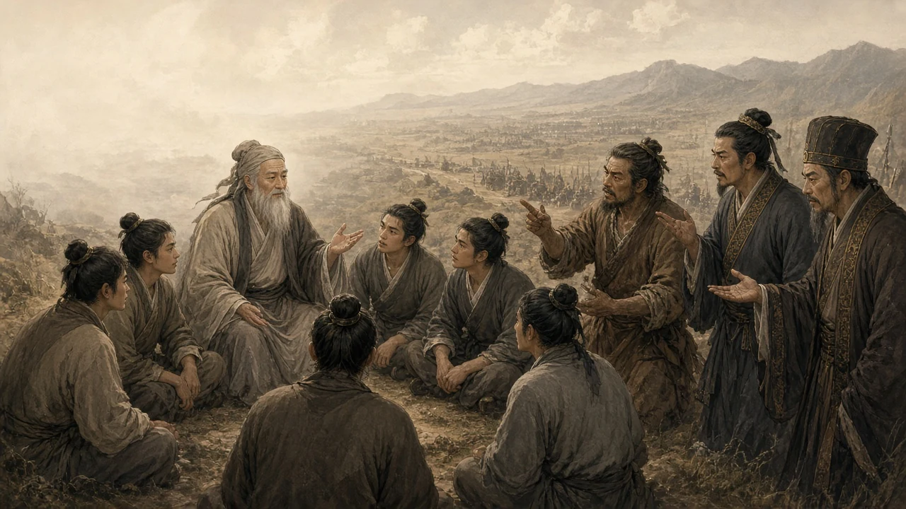
HIST 270 · History of China · Chapter 2 · Lecture 2
The Sage and His Challengers
Confucius, Mozi, Mencius and Xunzi
551–ca. 215 BCE · Confucius: Rule by Example · Mozi: Does It Help? · Is Human Nature Good? Background essay ↗
Teacher and disciples with three questioning outsiders; war beyond. AI-generated interpretation, not a historical record.
Welcome to Lecture 2 of Chapter 2. This deck follows the most famous of them, Confucius , and three thinkers who argued about his answer to a world at war: Mozi, Mencius and Xunzi (pp. 26–30).
Use the arrow keys to move, N for these notes, and Esc for a slide map. Three segments each end with a self-check and a Reading Guide question (Questions 5 to 7). The Pierian Spring at the end is required independent study.
Teacher and disciples with three questioning outsiders; war beyond. AI-generated interpretation, not a historical record.
Check yourself: Which three Reading Guide questions does this deck prepare you for?
Cold open · On the road from Lu · ca. 497–484 BCE
A Teacher from Lu Spent Years Looking for a Ruler Who Would Listen
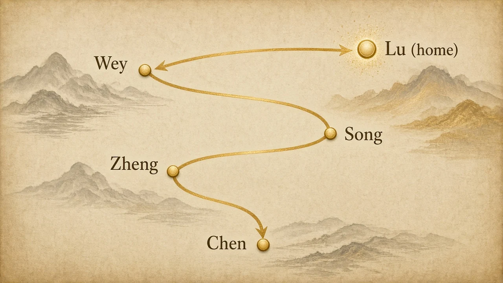
Sparse journey schematic: Lu, Wey, Song, Zheng, Chen. AI-generated explanatory schematic; geography and routes simplified, not to scale.
At home. As a young man he served the court of Lu without much influence.
On the road. He left Lu and wandered through nearby states with students.
The search. He looked for a ruler who would follow his advice.
The result. No ruler did, yet his students wrote down what he said.
Sources: Ebrey, Ch. 2, p. 26.
Start with a scene of failure. A teacher in his fifties sets out on the road with a handful of students. He is Confucius , from the small state of Lu (loo) in what is now Shandong. Early historians dated his life to 551–479 BCE (p. 26).
As a young man, your textbook says, Confucius served in the court of Lu without gaining much influence. So he left. He wandered through neighboring states with his students, searching for a ruler who would follow his advice (p. 26). Think of the world you studied in Lecture 1: rulers wanted generals, tax collectors and strategists who could help them survive. Confucius offered them something else, and none of them took him on as a chief minister.
Sparse journey schematic: Lu, Wey, Song, Zheng, Chen. AI-generated explanatory schematic; geography and routes simplified, not to scale.
Why this matters: the man who failed to find a ruler became the most influential teacher in Chinese history. This lecture asks what he taught and why others argued with him (Reading Guide Q5). You return to this road at the end.
Check yourself: Why did Confucius leave Lu, and what was he looking for?
Start here · How to study this deck on your own
Three Segments, Self-Checks, and a Narration Button Guide You Through This Deck
Modern student uses tablet with navigation, audio and overview icons. AI-generated interpretation, not a historical record.
Click Narration (lower right) or press N for each slide's Study Buddy notes.
Work through three segments; each ends with a self-check, then a Review Question.
Click a for a definition; click any image to enlarge it.
The Pierian Spring at the end is required independent study.
Arrow keys move; Esc shows a slide map. All due dates are on Canvas.
Sources: Ebrey, Ch. 2, pp. 26–27.
This slide gives you the controls. The deck is built for you to study on your own, at your own pace. Try each tool now so it feels natural later.
Every slide has Study Buddy notes, like these. Open them with the Narration button or the N key; press N or Esc to close them. They explain the slide, define new words, cite the textbook page, and end with a question. A good habit: read the slide first, guess what it is about, then open the notes and check your guess. The small letter in the lower-left corner is the slide's permanent name; quote it if you email a question.
The deck runs in three segments, one for each Reading Guide question from Question 5 to Question 7. Each segment ends with a self-check, quick questions that are never graded, and then the Review Question itself. Write your answer in your Reading Guide before you move on.
Modern student uses tablet with navigation, audio and overview icons. AI-generated interpretation, not a historical record.
Why this matters: testing yourself as you go is the surest way to remember what you study alone.
Check yourself: Open the narration for this slide, close it with Esc, then open the teal dotted word. Did both work?
Roadmap · Four voices, three segments
Four Voices Argued for 250 Years About How to End the Disorder
I
Confucius: Rule by Example Virtue, ritual and the gentleman. Question 5.
II
Mozi: Does It Help? Utility against ritual and war. Question 6.
III
Is Human Nature Good? Mencius against Xunzi. Question 7.
The thread: Confucius said good people make good order; his challengers asked what helps, and what people are.
This slide gives you the map of the lecture. One question runs through it: how could people end the disorder of the Eastern Zhou? Confucius answered with virtue, ritual and study (pp. 26–27).
Segment I: Confucius and his ideas about the family, ritual, government and the gentleman. Segment II: Mozi, who tested every idea by asking whether it helped people. Segment III: two of Confucius's own followers, Mencius and Xunzi, who split over whether human nature is good (pp. 27–30).
Check yourself: Name the three segments and the question that goes with each.
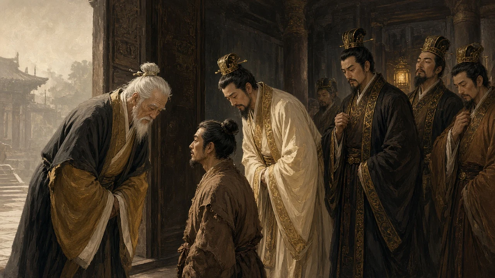
Segment 1 of 3 · Act I · ca. 500 BCE
Confucius: Rule by Example
Fix the family, cultivate yourself, lead by virtue, and order will follow.
Teacher respectfully greets lowly attendant; ruler and courtiers imitate. AI-generated interpretation, not a historical record.
Segment 1 begins. You meet Confucius's ideas: an ideal early Zhou, filial piety and five relationships, the virtues of ren and li , rule by virtue rather than punishment, and a new meaning for the word gentleman (pp. 26–27).
Teacher respectfully greets lowly attendant; ruler and courtiers imitate. AI-generated interpretation, not a historical record.
This segment builds toward Reading Guide Q5.
Check yourself: Guess before you start: if you wanted to end a war between states, would you begin with laws, armies or families?
Q5 story · Disciples and their notes · after 479 BCE
Disciples Wrote Down the Master’s Sayings, and Later Followers Added More
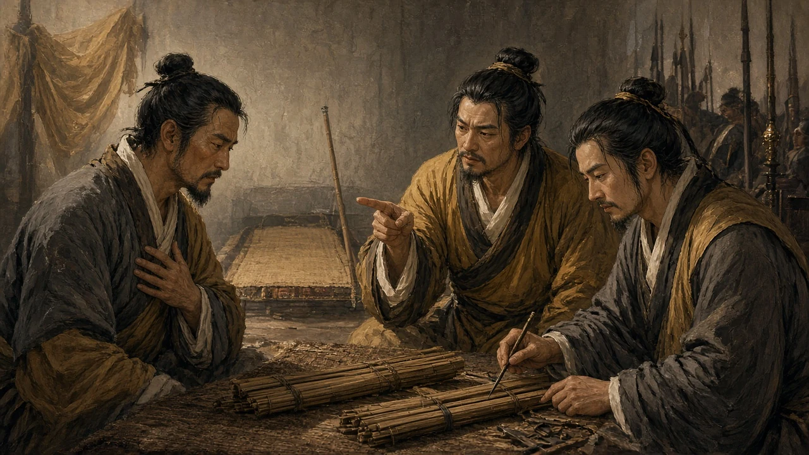
Followers compare memories around bamboo bundles; empty teachers mat behind. AI-generated interpretation, not a historical record.
Sayings. Disciples recorded his words in the Analects .
Layers. Followers added, cut and rearranged books after an author died.
Ethics first. His thought was ethical, not theoretical or metaphysical.
Labels later. “Confucianism” is a label later historians gave his followers.
Ch. 2 L1 · the hundred schools ↗
Sources: Ebrey, Ch. 2, p. 26.
This slide tells you how we know what Confucius taught. He wrote no book himself. His ideas are known to us primarily through the sayings recorded by his disciples in the Analects (p. 26). Recall from the hundred schools slide in Lecture 1 that followers wrote their teachers' ideas on silk and on strips of bamboo tied together; the recap link reopens that slide.
Your textbook adds two cautions. First, books of this age grew over time: after an author died, his followers added to his works, cut them and rearranged them, so scholars try to separate older and newer layers. Second, labels such as Confucianism, Daoism and Legalism were applied later, beginning with the historian Sima Qian about 100 BCE, and may give the mistaken impression that people at the time thought in those terms (p. 26).
The thrust of Confucius's thought, your textbook says, was ethical , about how to live and act, rather than theoretical or metaphysical , meaning about the ultimate nature of reality (p. 26).
Followers compare memories around bamboo bundles; empty teachers mat behind. AI-generated interpretation, not a historical record.
Why this matters: for Reading Guide Q5, every principle you study comes from this layered book of sayings.
Check yourself: Who wrote down the Analects, and why do scholars study its layers?
Q5 story · Looking back to the early Zhou · ca. 1045 BCE
Confucius Looked Back to an Early Zhou Where Everyone Played His Part
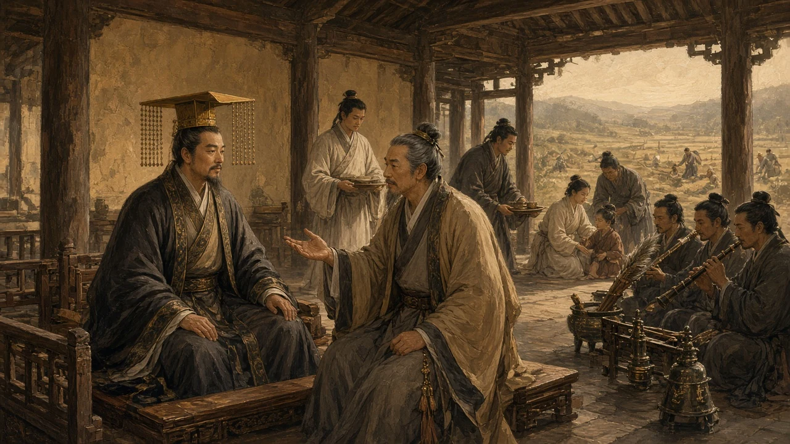
Ruler and adviser, musicians, household and farmers each cooperate. AI-generated interpretation, not a historical record.
A golden age. He spoke often of an ideal society in the early Zhou.
Superiors. Those above looked after those who depended on them.
Inferiors. Those below devoted themselves to serving their superiors.
Families. Parents, children, husbands and wives did what was expected.
Ch. 1 L3 · the three founders ↗
Sources: Ebrey, Ch. 2, p. 26.
This slide gives you Confucius's picture of a perfect society. He talked repeatedly of an ideal age in the early Zhou, which he imagined as a time when all people devoted themselves to fulfilling their roles (p. 26).
In that society, superiors looked after those dependent on them, inferiors devoted themselves to serving their superiors, and parents and children, husbands and wives all did wholeheartedly what was expected of them (p. 26). Notice what is missing: no new laws, no stronger army. Order comes from people doing their parts well.
In Chapter 1 you met the founders of the Zhou, including the Duke of Zhou , who served as regent for the young king. Later tradition made him Confucius's hero; your textbook does not name him here, so treat that link as tradition. The recap link reopens the Chapter 1 slide on the three founders.
The portrait is imagined, painted more than two thousand years after the Duke of Zhou lived; no real likeness survives.
Why this matters: for Reading Guide Q5, Confucius's ideal was a past to restore, which shaped everything he proposed.
Check yourself: In Confucius's ideal early Zhou, what did superiors and inferiors each owe one another?
Ruler and adviser, musicians, household and farmers each cooperate. AI-generated interpretation, not a historical record.
Q5 story · The family · Confucius’s teaching
Filial Piety and Five Relationships Held the Order Together
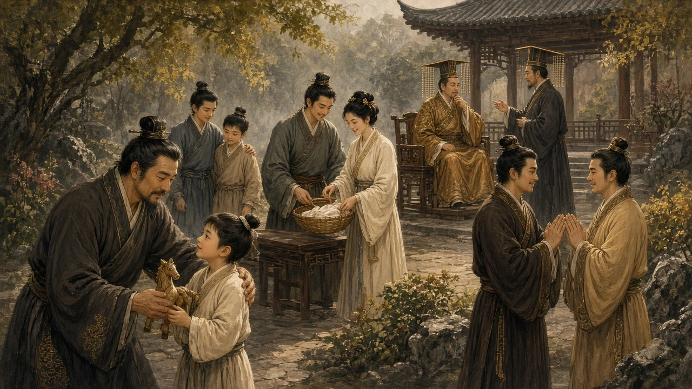
Five human pairs show reciprocal duty in courtyard vignettes. AI-generated interpretation, not a historical record.
Filial piety. Children obeyed parents, mourned them, and sacrificed to them afterward.
Tact. A child dissuaded a parent from a mistake, gently, without anger.
Four ranked bonds. Ruler–subject, father–son, husband–wife, elder–younger brother.
Senior and junior. The senior leads and protects; the junior supports and obeys.
Friends. The fifth bond was between equals.
Sources: Ebrey, Ch. 2, p. 26.
This slide gives you the family at the center of Confucius's thought. He saw much of value in family ties and praised filial piety , meaning devotion to one's parents. To him it included reverent obedience of children toward parents and performing the expected rituals, such as mourning parents when they died and making sacrifices to them afterward (p. 26).
Filial piety had limits. If parents were about to make a major mistake, the filial child should try to dissuade them as tactfully as possible, without angering them (p. 26).
The father–son bond was one of the five cardinal relations Confucius stressed. The others were ruler and subject, husband and wife, elder and younger brother, and friends. The first four were hierarchical: the senior leads and protects, the junior supports and obeys. The exception was friendship, a relationship of mutual obligations between equals (p. 26). Notice that four of the five are family bonds, and the ruler–subject bond is modeled on them.
Five human pairs show reciprocal duty in courtyard vignettes. AI-generated interpretation, not a historical record.
Why this matters: for Reading Guide Q5, these relationships are the foundation of his ethics and his politics.
Check yourself: Which of the five relationships was between equals, and what did the senior owe in the other four?
Q5 concept · Ren · Li
Concept: Ren Is Caring for Others; Li Is the Proper Form That Care Takes
Concept
Ren · Li
Ren (run): humanity or benevolence, caring about others and acting on it. Li (lee): ritual, manners and good form, the right way to act in each situation.
Ren. The ultimate virtue: a person of humanity cares about others.
Li. Rituals, from sacrifices to greetings, discipline how you behave.
Together. Ren is the feeling; li is its proper outward shape.
Other virtues. Filial piety, integrity, loyalty, honesty, reverence.
Sources: Ebrey, Ch. 2, pp. 26–27 (Confucian Virtues box, p. 26).
You need two Chinese terms before the next slides, because English has no exact match for either. Ren (run) was, to Confucius, the ultimate virtue. It has been translated as humanity, perfect goodness, benevolence, human-heartedness and nobility. A person of humanity cares about others and acts accordingly (p. 27).
Li (lee) means ritual, manners, propriety and good form (p. 27). It covers grand ceremonies, such as sacrifices to ancestors, and everyday conduct, such as how to greet a guest or speak to a parent. Confucius stressed disciplining one's behavior through ritual (p. 27).
The two fit together. Ren is the caring; li is the proper form that caring takes in each relationship. Your textbook's box of Confucian virtues lists seven: ren (humanity), xiao (filial piety), yi (integrity), zhong (loyalty), xin (honesty), jing (reverence) and li (propriety) (p. 26).
Why this matters: Reading Guide Q5 asks for Confucius's foundational principles; ren and li are the two you cannot leave out.
Check yourself: In your own words, what is the difference between ren and li?
Q5 story · Analects 2.3 and 12.2 · Confucius on government
“Lead Them by Virtue”: Confucius Rejected Rule by Punishment
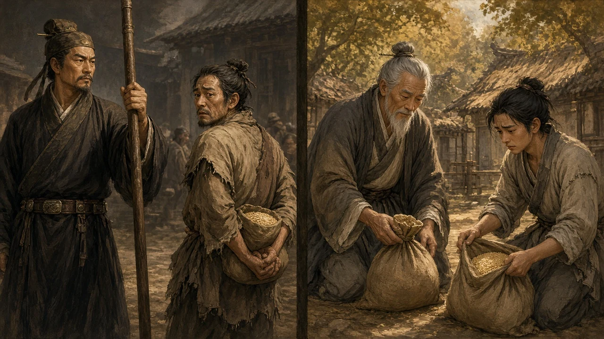
Hiding grain under guard versus voluntarily restoring it. AI-generated interpretation, not a historical record.
Sources: Ebrey, Ch. 2, p. 27; Analects 2.3, 12.2, 8.2, 3.26.
This slide gives you Confucius's political program in his own words. The gentleman, he said, should advise his ruler on how to govern, and much of the Analects concerns governing well (p. 27). The key passage: "Lead the people by means of government policies and regulate them through punishments, and they will be evasive and have no sense of shame. Lead them by means of virtue and regulate them through rituals and they will have a sense of shame and moreover have standards" (2.3).
Asked about ren, he said: treat everyone as if welcoming a great guest, employ people as though conducting a great sacrifice, and "Do not do unto others what you would not have them do unto you" (12.2). Treating people that way means treating them according to li (p. 27). But ritual must not be empty: "Respect without ritual is tiresome" (8.2), and "Ritual performed without reverence and mourning performed without grief are things I cannot bear" (3.26).
Hiding grain under guard versus voluntarily restoring it. AI-generated interpretation, not a historical record.
Why this matters: for Reading Guide Q5, 2.3 is Confucius's political principle; in Lecture 3 the Legalists attack it.
Check yourself: According to Analects 2.3, what goes wrong when rulers rely on punishments?
Q5 story · A word with a new meaning · Analects 15.18
A “Lord’s Son” Became Anyone Who Cultivated Himself
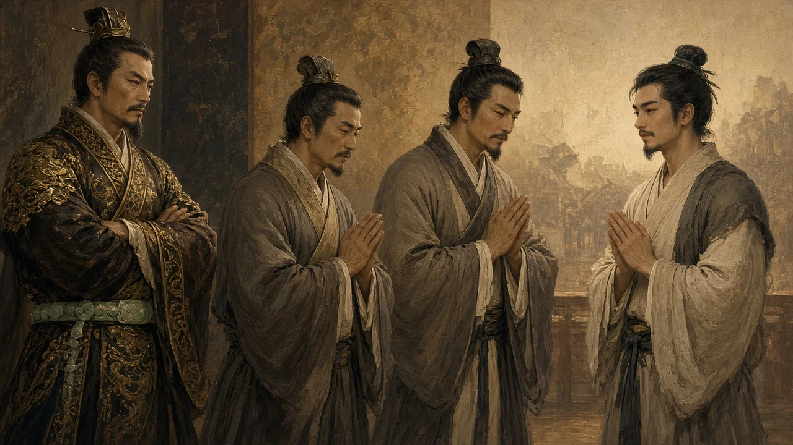
Plain scholar receives respect; wealthy noble stands apart. AI-generated interpretation, not a historical record.
Old meaning. Junzi literally meant “son of a lord,” a nobleman by birth.
New meaning. A man of moral cultivation, not of noble birth.
The contrast. Gentlemen of integrity against petty men seeking personal gain.
The test. He worries about his abilities, not about being recognized.
His task. The gentleman should advise his ruler on how to govern.
Independent study: Pierian Spring on Confucius defending Guan Zhong →
Sources: Ebrey, Ch. 2, pp. 26–27; Analects 15.18.
This slide gives you the idea Reading Guide Q5 asks about directly. Confucius urged his followers to become true gentlemen. The word was junzi (jewn-dze), which literally meant "son of a lord." Confucius redefined it to mean men of moral cultivation rather than men of noble birth (pp. 26–27).
He set the gentleman against the petty man , who seeks personal gain. The gentleman, he said, "feels bad when his capabilities fall short of the task. He does not feel bad when people fail to recognize him" (15.18). And the gentleman's job was public: he should advise his ruler on the best way to govern (p. 27).
Connect this to Lecture 1. Birth was mattering less, and talented shi were competing for posts. Confucius kept an old aristocratic word but changed what earned it, from bloodline to character and learning.
Plain scholar receives respect; wealthy noble stands apart. AI-generated interpretation, not a historical record.
Why this matters: this redefinition is the second half of Reading Guide Q5; the anchor sentence on page 26 begins "Confucius urged his...".
Check yourself: What did junzi mean before Confucius, and what did it mean after him?
Q5 story · Study and sacrifice · Analects 7.19, 15.30
Study Beat Meditation, and the Spirits Were Treated “As Though Present”
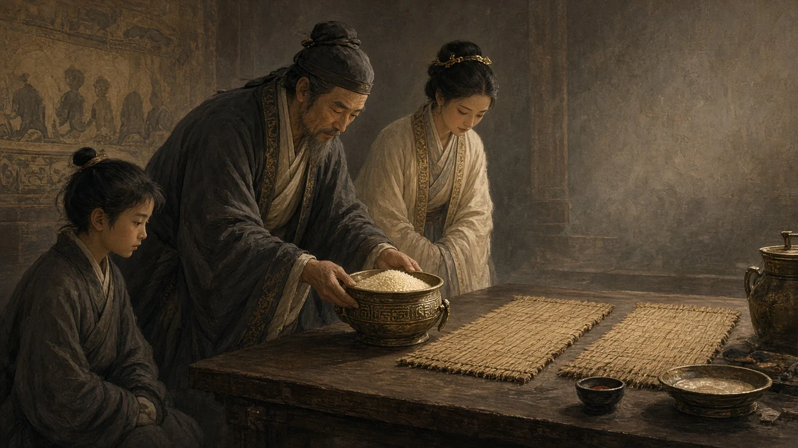
Living family offers grain toward empty ancestral mats. AI-generated interpretation, not a historical record.
Not born wise. “I love the ancients and try to learn from them.”
Study wins. A day and night of thinking failed: “It is better to study.”
The classics. His students mastered poetry, rituals and historical traditions.
Spirits. He sacrificed as though the spirits were present.
This world. He talked mostly of society and politics, not gods or ghosts.
Ch. 1 L1 · feeding the ancestors ↗
Sources: Ebrey, Ch. 2, p. 27; Analects 7.19, 15.30.
This slide gives you two habits that set Confucius apart: he trusted study, and he was cautious about spirits. In the Confucian tradition, studying texts came to be valued over speculation, meditation and mystical union with gods. Confucius had his students master the poetry, rituals and historical traditions we now call the Confucian classics (p. 27).
Two sayings show his confidence in study: "I am not someone who was born wise. I am someone who loves the ancients and tries to learn from them" (7.19); and "I once spent a whole day without eating and a whole night without sleeping in order to think. It was of no use. It is better to study" (15.30).
On religion, Confucius talked mostly about the social and political world, not gods, ghosts or ancestral spirits. Though deeply committed to ritual, he was said to have performed sacrifices as though the spirits were present, which leaves open whether he believed the offerings helped them (p. 27). Compare the Shang kings feeding their ancestors in Chapter 1; the recap link reopens that slide.
Living family offers grain toward empty ancestral mats. AI-generated interpretation, not a historical record.
Why this matters: for Reading Guide Q5, study is how anyone could become a gentleman.
Check yourself: What did Confucius say was better than thinking all night?
Self-check · Segment 1 · not graded
Check Yourself: Confucius and Rule by Example
Answer each question from memory, out loud or on paper, then click Show answer . Nothing here is graded or recorded.
1. How do we know what Confucius taught?
Show answer
Mainly through the sayings his disciples recorded in the Analects , a book later followers added to (p. 26).
2. Name the five relationships. Which one was between equals?
Show answer
Ruler–subject, father–son, husband–wife, elder–younger brother, and friends; friendship was between equals (p. 26).
3. What happens when rulers lead by virtue and ritual instead of punishment (Analects 2.3)?
Show answer
People gain a sense of shame and have standards, instead of evading the rules (p. 27).
4. What did junzi mean before and after Confucius?
Show answer
Before: “son of a lord,” a man of noble birth. After: a man of moral cultivation (pp. 26–27).
Missed one? Go back: analects five-relations virtue-not-punishment junzi-redefined
Segment 1 is done. Before you open Review Question 5, test yourself. These four questions come from the Check yourself prompts on the segment's slides (pp. 26–27).
Answer each one from memory, out loud or on paper, before you click Show answer . Struggling a little before you look is what makes facts stick. If you miss one, use the links at the bottom of the slide to go back to the slide that teaches it, reread its notes, and try again.
Notice that the questions follow the segment's path: the source, the family, government and the gentleman. Those are the raw materials for Review Question 5.
Why this matters: recalling facts without looking is the best preparation for writing an answer in your own words.
Check yourself: Which question did you miss or guess, and which slide will you reread before Review Question 5?
Your turn · Reading Guide · Review Question 5
Reading Guide · Review Question 5
Review Question 5
What were the foundational principles of Confucius’s ethical and political philosophy, and how did he redefine the concept of the “gentleman” (junzi )?
Open the Reading Guide ↗
Two parts: first the principles (ethics, family, ritual, government), then the gentleman. Quote one Analects passage as evidence.
Go back to the teaching slides: G · ideal-zhou H · five-relations I · concept-ren-li J · virtue-not-punishment K · junzi-redefined L · study-and-spirits
Reading Guide Q5 (p. 26). This is your first checkpoint. Try to answer on your own before you open the Reading Guide; the button opens it in a new tab, so this deck stays where you left it.
How to build a strong answer: the question has two parts. For the foundational principles , gather evidence from the ideal Zhou slide (the society he wanted), the five relationships slide (the family as the base), the ren and li concept slide (the key virtues), and the lead by virtue slide (his politics). Decide which principle is ethical and which is political, and say how they connect.
For the gentleman , use the junzi slide: what the word meant before, what Confucius made it mean, and what the gentleman was supposed to do. The study slide shows how a person became one.
End with a judgment of your own: why would redefining an old aristocratic word matter in the age of the shi? The guide asks you to copy the sentence beginning "Confucius urged his..." on page 26; compare it with what you wrote.
Why this matters: every thinker in the rest of this deck is answering Confucius.
Check yourself: Can you name two principles and one Analects passage that supports each?
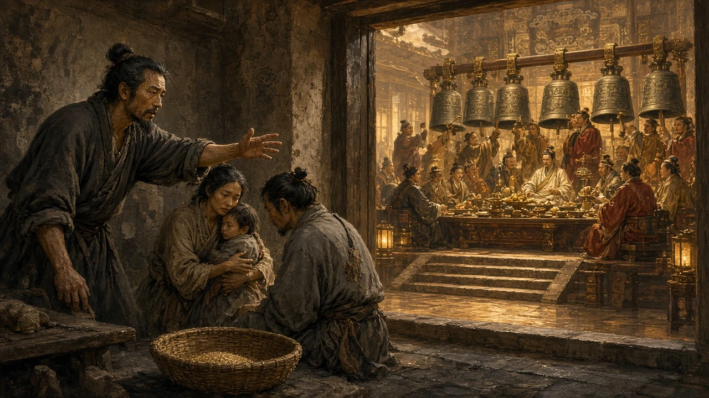
Segment 2 of 3 · Act II · ca. 480–390 BCE
Mozi: Does It Help?
A craftsman tested every custom by one question: does it benefit the people?
Hungry household outside lavish bell orchestra and banquet. AI-generated interpretation, not a historical record.
Segment 2 begins. Not long after Confucius died, his ideas were challenged by Mozi (maw-dze), who judged every custom by whether it helped the people and the state (p. 27).
Hungry household outside lavish bell orchestra and banquet. AI-generated interpretation, not a historical record.
This segment builds toward Reading Guide Q6.
Check yourself: Guess: what would a man who measured everything by usefulness say about a set of bronze bells?
Q6 story · A challenger from the workshops · ca. 480–390 BCE
A Craftsman Asked Everyone to Care for Strangers as for Family
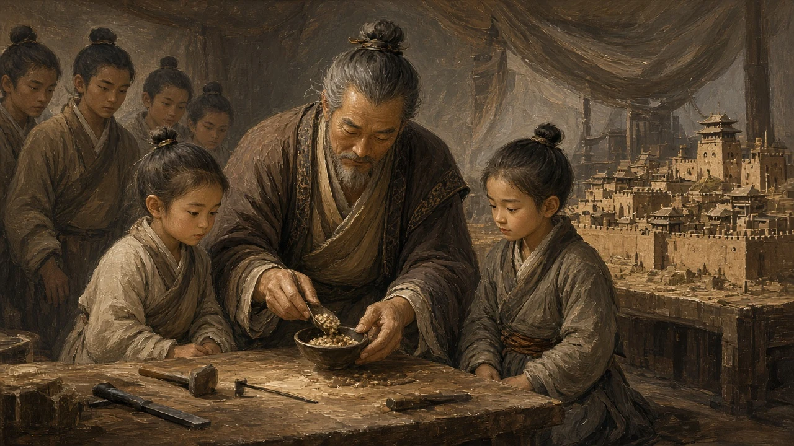
Craftsman gives food to two children beside workbench and defense model. AI-generated interpretation, not a historical record.
Not a noble. Mozi came from the master craftsmen, though he was well read.
No petty men. He spoke of “concern for everyone,” not gentlemen versus petty men.
The idea. Give other families and states the concern you give your own.
The proof. Leaving family with someone, you pick a person who shares this ideal.
Merit. Rulers should choose advisers for ability, not birth.
Sources: Ebrey, Ch. 2, p. 27.
This slide introduces the first great challenger. Mozi (maw-dze, ca. 480–390 BCE) came not from the aristocracy but from among the master craftsmen. He was well read, and like Confucius he quoted the Book of Documents and the Book of Poetry (p. 27).
Unlike Confucius, Mozi did not talk about gentlemen and "petty men." He talked about concern for everyone , sometimes translated as "universal love." Conflict, he argued, could be eliminated if everyone gave other people's families and other people's states the same concern he gave his own (p. 27).
He offered two arguments. First, everyone already recognizes the idea: if you must leave your family in someone's care, you choose a person who accepts this ideal. Second, to the objection that impartiality is too hard, he answered that the sage kings of old had practiced it. He also argued strongly for the merit principle : rulers should choose advisers for ability, not birth (p. 27).
The portrait is modern and imagined; no likeness of Mozi from his lifetime survives.
Why this matters: for Reading Guide Q6, equal concern is Mozi's challenge to the Confucian family ties you studied in the five relationships slide.
Check yourself: How did Mozi try to prove that people already accept concern for everyone?
Craftsman gives food to two children beside workbench and defense model. AI-generated interpretation, not a historical record.
Q6 concept · Utility
Concept: Utility Judges Any Idea by Whether It Benefits People
Concept
Utility
Utility means usefulness. A utility test asks of any idea or custom: does it benefit the people and the state? If not, drop it.
The test. The book Mozi evaluates every idea by its utility.
The measure. Benefit to the people and the state, not tradition.
The contrast. Confucius asked what is proper; Mozi asked what helps.
The targets. Family favoritism, costly ritual, music, and aggressive war.
Sources: Ebrey, Ch. 2, p. 27.
You need one term before the next stories. Utility simply means usefulness. Your textbook says the book ascribed to Mozi, called the Mozi , "proposes that every idea be evaluated on the basis of its utility: does it benefit the people and the state?" (p. 27).
Think of it as a test you can apply to anything. Confucius asked whether an act was proper, whether it fit the ritual and the relationship. Mozi asked whether it produced benefits: food, wealth, safety, a strong state. A custom could be ancient and beautiful and still fail his test.
Notice that the test is the same for everyone. It does not care whose family or state benefits, which fits Mozi's idea of concern for everyone. In the next two slides you see him apply it to mourning, music and war.
Why this matters: Reading Guide Q6 asks exactly how Mozi used utility to challenge Confucian ideas about family ties, ritual and warfare.
Check yourself: State Mozi's utility test as a question, in your own words.
Q6 story · Funerals and bells · 5th century BCE
Three Years of Mourning and Great Bell Sets Failed Mozi’s Test
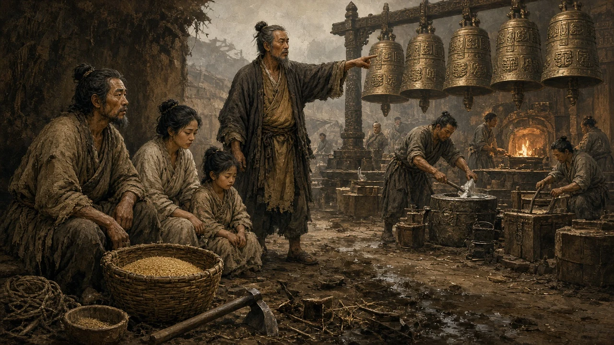
Idle mourning household and neglected tools beside costly bell production. AI-generated interpretation, not a historical record.
Mourning. Three years of mourning a parent interrupted work and injured health.
The cost. Families grew poor, and the state grew weak.
Music. Mozi called music a wasteful extravagance of no utility.
One tomb. A ruler who died in 433 BCE took 124 instruments with him.
The bells. Five men with poles and mallets were needed to play the set.
Sources: Ebrey, Ch. 2, pp. 27–28 (Bells of the Marquis of Yi caption, p. 28).
This slide shows Mozi's test in action against Confucian ritual. Using his standard of utility, Mozi rejected many of the rituals Confucius's followers emphasized, especially mourning parents for three years. That, he noted, interrupts work, injures health, and thus impoverishes the people and weakens the state (p. 27). Recall from the five relationships slide that mourning parents was part of Confucian filial piety, so Mozi was attacking the family duty at the heart of the system.
Music, too, Mozi saw as a wasteful extravagance of no utility (p. 27). Look at what he meant. Your textbook pictures the tomb of a minor ruler, the Marquis of Yi, who died in 433 BCE. It held 124 musical instruments, including drums, flutes, mouth organs, pan pipes, zithers, a set of 32 chime stones and a bell set that your textbook calls 64 pieces. Five men with poles and mallets were needed to play the bells (p. 28). Two small corrections: most counts give the set as 65 bells, 64 plus one presented by the king of Chu; and "Yi" was the ruler's personal name, while his state was Zeng, so museums call him Marquis Yi of Zeng.
Idle mourning household and neglected tools beside costly bell production. AI-generated interpretation, not a historical record.
Why this matters: for Reading Guide Q6, mourning and music are Mozi's two clearest attacks on ritual.
Check yourself: Give Mozi's three reasons for rejecting three years of mourning.
Q6 story · Mohists on the walls · 5th–4th century BCE
Mohists Opposed Aggressive War and Rushed to Defend Besieged Cities
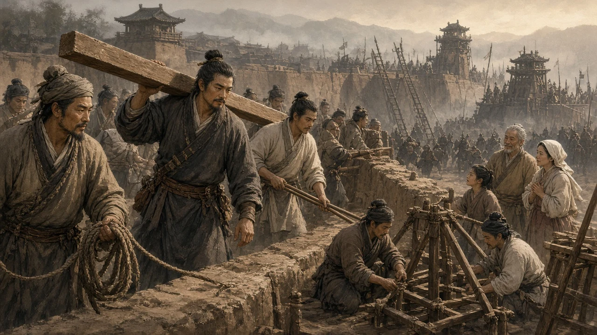
Engineers bring timber and rope to a threatened city wall. AI-generated interpretation, not a historical record.
No glory. Mozi saw no glory in expansion for its own sake.
The math. A captured city is not worth thousands of lost men.
Defenders. Organized Mohists rushed to help cities under attack.
Group duty. Each soldier answered for the two beside him on the wall.
Obedience. Everyone should conform to superiors; the king, to Heaven.
Ch. 2 L1 · sieges and long walls ↗
Sources: Ebrey, Ch. 2, pp. 27–28.
This slide carries Mozi's test from ritual to war. Mozi made a similar case against aggressive war, seeing no glory in expansion for its own sake. He pointed to the huge losses in weapons, horses and human lives, and argued that the capture of a city is not worth the loss of thousands of men (p. 27). Think back to the sieges and long walls in Lecture 1; the recap link reopens that slide.
Mozi was no pacifist dreamer, and he was not against government. He was for strong government and obedience toward superiors: disorder could be eliminated if everyone conformed his beliefs to his superior's, and the king conformed to Heaven (pp. 27–28).
His followers, the Mohists , organized themselves into tight groups. Because they saw offensive war as evil, they considered it their duty to come to the aid of cities under attack, and they became experts in siege defense. They taught, for instance, that each soldier on the walls should be held responsible for the two soldiers on his left and right, a form of group responsibility later picked up by the Legalists (p. 28).
Engineers bring timber and rope to a threatened city wall. AI-generated interpretation, not a historical record.
Why this matters: for Reading Guide Q6, this is Mozi's challenge on warfare.
Check yourself: Why did Mohists defend cities but oppose attacking them?
Q6 story · What survived of Mozi · 4th century BCE onward
Confucians Kept Mozi’s Merit and Thrift but Rejected Equal Love
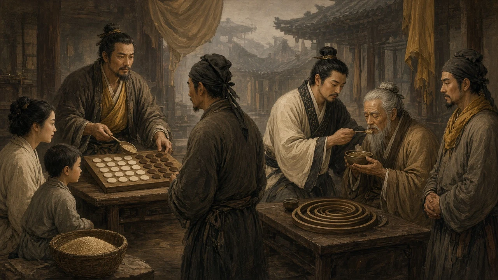
Equal-portion side contrasted with first feeding elderly father. AI-generated interpretation, not a historical record.
Decline. After a few centuries, Mozi’s school lost its distinct identity.
Absorbed. Confucians took in merit and criticism of extravagance.
Borrowed. Mencius used Mozi’s arguments against military aggression.
Rejected. Treating everyone equally seemed unnatural to Confucians.
Not measured. Ritual and music had value beyond any utility test.
Sources: Ebrey, Ch. 2, p. 28.
This slide tells you how the argument between Mozi and the Confucians came out. Mozi had many followers for a couple of centuries, but after a few centuries his school declined and eventually lost its distinct identity (p. 28).
Some of his ideas lived on inside Confucianism. Support for the merit principle and criticism of extravagance were absorbed into Confucian thought in later centuries. Mencius , who lived a century after Mozi and whom you meet next, borrowed Mozi's arguments against military aggression and, like him, often tried to persuade rulers that they had misjudged where their advantage lay (p. 28).
Two ideas Confucians never accepted. They rejected treating everyone equally, which they saw as unnatural; remember that the five relationships are built on special duties to particular people. And they rejected applying rigidly utilitarian tests to ritual and music, whose value they saw in very different terms (p. 28). Xunzi explains that value at the end of this deck.
Equal-portion side contrasted with first feeding elderly father. AI-generated interpretation, not a historical record.
Why this matters: for Reading Guide Q6, this slide shows where the two philosophies finally parted.
Check yourself: Name one Mohist idea Confucians absorbed and one they rejected.
Self-check · Segment 2 · not graded
Check Yourself: Mozi and the Test of Utility
Answer each question from memory, out loud or on paper, then click Show answer . Nothing here is graded or recorded.
1. What did Mozi mean by “concern for everyone”?
Show answer
Giving other people’s families and states the same concern you give your own (p. 27).
2. What is Mozi’s utility test?
Show answer
Judge every idea by whether it benefits the people and the state (p. 27).
3. Why did Mozi reject three years of mourning and music?
Show answer
Mourning interrupted work and injured health, impoverishing people and weakening the state; music was wasteful extravagance (p. 27).
4. What did the Mohists do about war?
Show answer
They opposed aggressive war and went to defend besieged cities, as siege experts (pp. 27–28).
Missed one? Go back: mozi-craftsman concept-utility mourning-and-music siege-defenders
Segment 2 is done. Before you open Review Question 6, test yourself. These four questions come from the Check yourself prompts on the segment's slides (pp. 27–28).
Answer each one from memory, out loud or on paper, before you click Show answer . If you miss one, use the links at the bottom of the slide to go back to the slide that teaches it, reread its notes, and try again.
Notice that the four questions line up with the three targets in Review Question 6: family ties (concern for everyone), ritual (mourning and music) and warfare (the Mohist defenders), with utility as the tool behind all three.
Why this matters: recalling facts without looking is the best preparation for writing an answer in your own words.
Check yourself: Which question did you miss or guess, and which slide will you reread before Review Question 6?
Your turn · Reading Guide · Review Question 6
Reading Guide · Review Question 6
Review Question 6
Contrast the philosophies of Mozi and Confucius. In what specific ways did Mozi use the concept of utility to challenge Confucian ideas regarding family ties, ritual, and warfare?
Open the Reading Guide ↗
Two parts: first contrast the two thinkers, then show utility at work on family ties, ritual and warfare, one example each.
Go back to the teaching slides: P · mozi-craftsman Q · concept-utility R · mourning-and-music S · siege-defenders T · confucian-reply H · five-relations
Reading Guide Q6 (p. 27). Try to answer on your own first; the button opens the guide in a new tab.
How to build a strong answer: for the contrast , set Mozi's background and ideas on the craftsman slide beside Confucius's on the five relationships and junzi slides. Who did each man come from, and whom did each say we owe the most?
Then use the utility slide to state Mozi's test, and apply it three times, once for each target the question names. Family ties: concern for everyone, on the craftsman slide. Ritual: mourning and music, on the bells slide. Warfare: the Mohist defenders slide. For each, say what Mozi rejected and what reason his test gave.
End with a judgment using the Confucian reply slide: which part of Mozi's challenge did Confucians accept, and which did they refuse? The guide asks you to copy the sentence beginning "Using this standard..." on page 27.
Why this matters: you meet a third test of Confucius's ideas, Han Feizi's, in Lecture 3.
Check yourself: Can you give one example of utility for each of family, ritual and war?
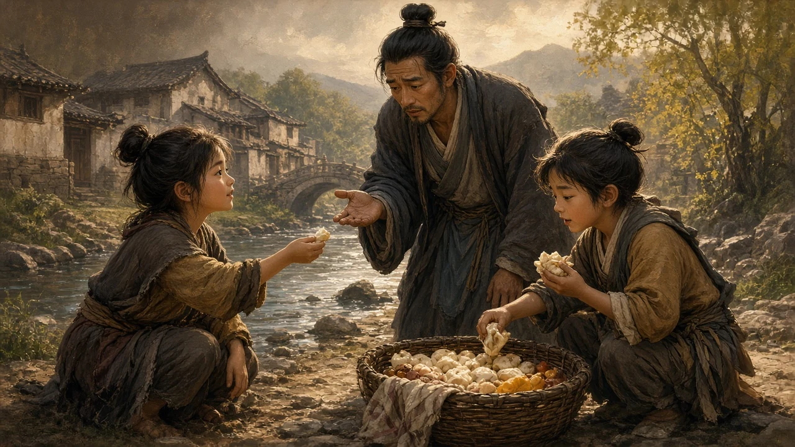
Segment 3 of 3 · Act III · ca. 370–215 BCE
Is Human Nature Good?
Two followers of Confucius split over what people are made of, and so over how to rule them.
Children at stream share and grab; adult questions. AI-generated interpretation, not a historical record.
Segment 3 begins. Now the argument moves inside the Confucian school. Mencius and Xunzi both followed Confucius, but they disagreed about human nature, and that disagreement shaped how each wanted rulers to govern (pp. 28–30).
Children at stream share and grab; adult questions. AI-generated interpretation, not a historical record.
This segment builds toward Reading Guide Q7.
Check yourself: Guess: are people born good, born selfish, or neither? Hold your answer until the end of the segment.
Q7 concept · Human nature
Concept: “Human Nature” Means What People Are Like Before Anyone Teaches Them
Concept
Human nature
Human nature (xing , shing) is what people are born with: the feelings and tendencies they have before teaching, training or law shape them.
Mencius. Human nature is good; everyone is born able to recognize right.
Xunzi. People are born selfish; goodness must be taught.
Gaozi. Nature is neither good nor bad, like water that can flow anywhere.
The stakes. What people are decides how a ruler should govern them.
Sources: Ebrey, Ch. 2, pp. 29–30.
You need one idea before the next stories. Human nature means what people are like by birth, before anyone teaches, trains or punishes them. The Chinese word is xing (shing).
Three answers appear in your textbook. Mencius argued that human nature was fundamentally good, because everyone is born with the capacity to recognize what is right (p. 29). A rival named Gaozi said nature is no more inclined to good or bad than water is inclined to flow east or west (p. 29). Xunzi argued that people are born selfish and learn to put moral principle above their own interest only through education and ritual (p. 29).
Why should a ruler care? If people are naturally good, a ruler's job is to protect and encourage that goodness. If people are naturally selfish, a ruler must shape them, with teaching, ritual and sometimes punishment. Watch for that link in every slide that follows.
Why this matters: Reading Guide Q7 asks you to compare these views and show how each shaped government and moral development.
Check yourself: In one sentence each, what did Mencius and Xunzi say about human nature?
Q7 story · The court of Liang (Wei) · 320–314 BCE
“Why Must Your Majesty Use the Word ‘Benefit’?”
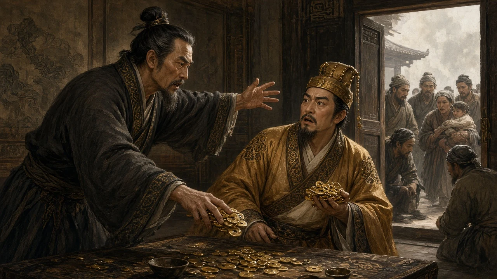
Teacher pushes wealth aside and points toward hungry people. AI-generated interpretation, not a historical record.
The king. “You must have some ideas about how to benefit my state.”
The answer. “All I am concerned with are the benevolent and the right.”
The danger. If all seek benefit, from ruler to commoner, the state is in danger.
His program. Benevolent rule wins the people and unifies “all under Heaven.”
In practice. Lighter taxes, and no seeking military victories.
Independent study: Pierian Spring on Mencius and Heaven →
Sources: Ebrey, Ch. 2, pp. 28–29; Mencius 1A.1.
This slide brings you to a royal court. Mencius (Mengzi, muhng-dze, ca. 370–ca. 300 BCE) came from the small state of Zou, next to Confucius's Lu. Born too late to study with Confucius, he was said to have studied with a student of Confucius's grandson (p. 28). Like Confucius, he traveled to advise rulers.
The book Mencius opens with a meeting. King Hui of Liang, the state also called Wei, greeted him: "Sir, you did not consider a thousand li too far to come. You must have some ideas about how to benefit my state." Mencius replied: "Why must Your Majesty use the word 'benefit'? All I am concerned with are the benevolent and the right." If the king asks how to benefit his state, his officials will ask how to benefit their families, and commoners how to benefit themselves, and once all compete for benefit, the state is in danger (1A.1). A li here is a distance, about a third of a mile.
Mencius urged rulers to win the people through benevolent government, which would unify "all under Heaven," to ease taxes, and to give up seeking military victories (pp. 28–29). Notice the echo of Mozi's case against war, and the rejection of Mozi's word, benefit.
Teacher pushes wealth aside and points toward hungry people. AI-generated interpretation, not a historical record.
Why this matters: for Reading Guide Q7, this is Mencius's approach to government.
Check yourself: Why did Mencius object to the word "benefit"?
Q7 story · A thought experiment · Mencius 2A.6
Anyone Would Grab a Child About to Fall into a Well
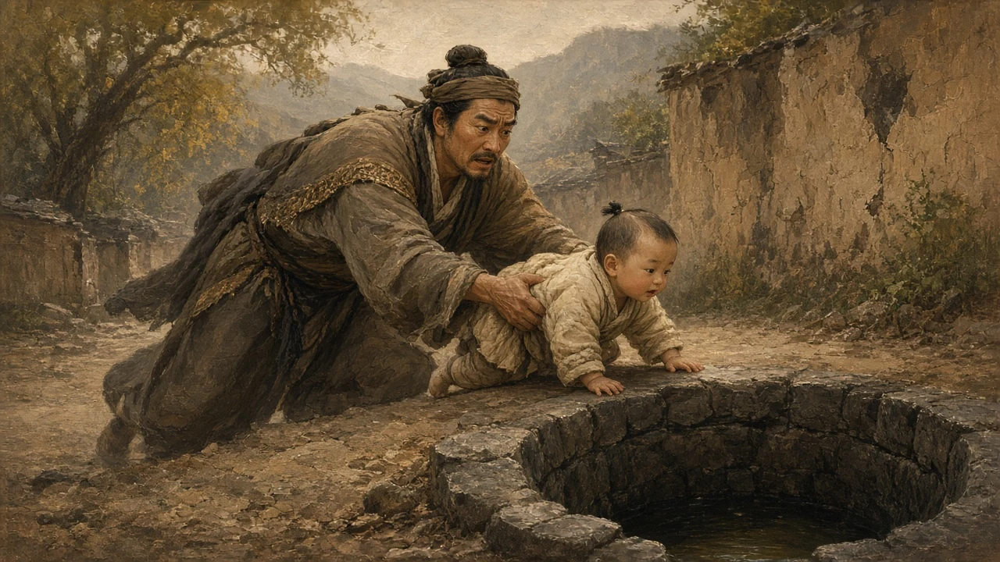
Adult spontaneously catches toddler at well rim. AI-generated interpretation, not a historical record.
The scene. A baby crawls toward the edge of a well.
The reflex. Anyone would grab it, automatically, without stopping to think.
Not for gain. Not for the parents’ favor, fame, or to stop the crying.
The source. Inborn commiseration and a sense of right and wrong.
Sources: Ebrey, Ch. 2, p. 29; Mencius 2A.6.
This slide gives you Mencius's most famous argument. Although most of the Mencius is about government, Mencius argued strongly that human nature is fundamentally good, because everyone is born with the capacity to recognize what is right (p. 29).
His proof is a thought experiment. Picture a person who sees a baby about to fall into a well. He grabs it automatically. Why? "It would not be because he wanted to improve his relations with the child's parents, nor because he wanted a good reputation among his friends and neighbors, nor because he disliked hearing the child cry" (2A.6). It comes from inborn feelings of commiseration , meaning feeling another's pain, and an inborn sense of right and wrong (p. 29).
Follow the logic. If goodness is already inside everyone, moral development means growing what you were born with, and a good ruler protects and draws out that goodness rather than forcing it. Mencius's contempt for officials who squeezed taxes out of the people without reforming the ruler fits this view (p. 29).
Adult spontaneously catches toddler at well rim. AI-generated interpretation, not a historical record.
Why this matters: for Reading Guide Q7, this is the evidence for Mencius's view of human nature.
Check yourself: Name the three motives Mencius ruled out, and the one he said was real.
Q7 story · Video · Mencius 2A.6
Watch: Mencius and the Baby in the Well
VIDEO
Watch for
Why the rescue happens without calculation
The three motives Mencius rules out
How the scene supports inborn goodness
Video: “Mencius - The Baby in the Well,” Professor Austin / Seek Learning. Watch on YouTube ↗
Sources: Ebrey, Ch. 2, p. 29; Mencius 2A.6; video: “Mencius - The Baby in the Well,” Steven Austin.
This slide gives you a short video that walks through Mencius's baby-in-the-well argument, the same thought experiment on the previous slide. Press play, then use the three “watch for” prompts to focus.
What the video covers, in words: it restates Mencius's claim that anyone who suddenly sees a child about to fall into a well feels alarm and compassion at once, and that this reflex is not for the parents' favor, for reputation, or to stop the crying. That spontaneous care is Mencius's evidence for an inborn moral sense (2A.6; p. 29).
If the video will not play inside the deck, use the “Watch on YouTube” link. The previous slide and these notes still give you everything you need for Reading Guide Q7.
Why this matters: hearing the argument spoken helps you retell it in your own words on the checkpoint.
Check yourself: In one sentence, what does the baby-in-the-well scene prove for Mencius?
Q7 story · A debate about water · Mencius 6A.2
Gaozi Said Nature Was Like Water; Mencius Said Water Flows Down
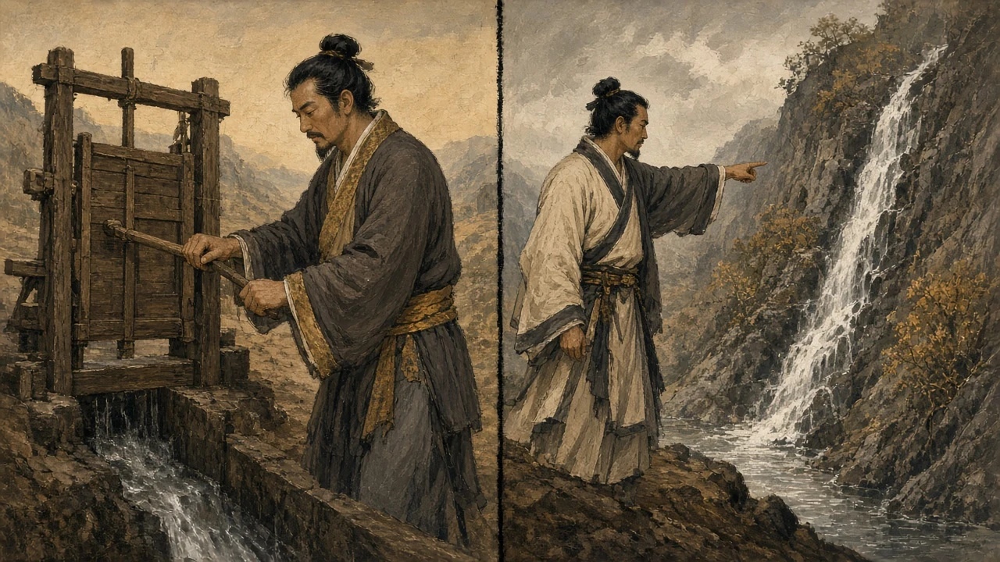
Sluice-diverted water versus naturally falling stream. AI-generated interpretation, not a historical record.
Gaozi. Nature is like whirling water; it flows wherever an outlet opens.
His point. Nature leans no more to good than water leans east.
Mencius. But water does prefer to flow down, as nature tends to good.
Splashing. Forced water can go uphill; that is circumstance, not nature.
Sources: Ebrey, Ch. 2, p. 29; Mencius 6A.2.
This slide replays a real debate. Mencius quotes conversations with a philosopher of his own day, Gaozi (gow-dze), who disagreed with him (p. 29).
Gaozi said: "Human nature is like whirling water. When an outlet is opened to the east, it flows east; when an outlet is opened to the west, it flows west. Human nature is no more inclined to good or bad than water is inclined to east or west." In other words, people become whatever their surroundings make them.
Mencius turned the image around: "Water, it is true, is not inclined to either east or west, but does it have no preference for high or low? Goodness is to human nature like flowing downward is to water." Water can be splashed higher than your head or forced uphill, but "this isn't the nature of water; it is the specific circumstances. Although people can be made to be bad, their natures are not changed" (6A.2).
Notice the move: Mencius admits that people do bad things, then blames circumstances, not nature. That is why he wanted rulers to change the circumstances.
Sluice-diverted water versus naturally falling stream. AI-generated interpretation, not a historical record.
Why this matters: for Reading Guide Q7, this debate shows how Mencius defended his view against a rival.
Check yourself: How did Mencius explain people doing bad things if their nature is good?
Q7 story · Xunzi answers Mencius · 3rd century BCE
Xunzi Said People Are Born Selfish and Must Be Taught
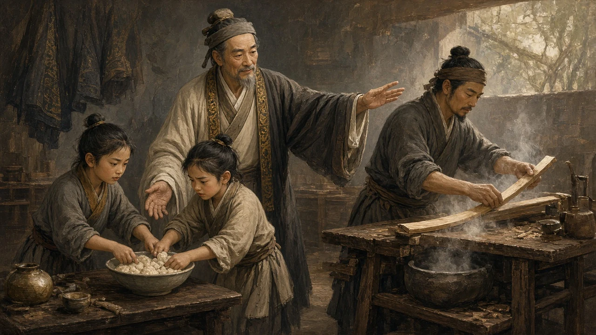
Teacher stops children grabbing food; craftsman bends wood. AI-generated interpretation, not a historical record.
A rival heir. Xunzi was Mencius’s rival as interpreter of Confucius’s legacy.
His claim. People are born selfish; education and ritual teach them morality.
The example. A son yielding to his father acts against his nature.
Yet right. That act is the way of the filial son and of ritual.
Experience. Unlike Confucius and Mencius, he served many years in government.
Sources: Ebrey, Ch. 2, p. 29; Xunzi , ch. 23 (textbook: 13).
This slide introduces the other side. The Xunzi was written in large part by Xunzi (shyewn-dze), who lived a half-century after Mencius and was his rival as an interpreter of Confucius's legacy. Your textbook dates him ca. 310–ca. 215 BCE; most scholars place his death around 238–235 BCE (p. 29).
Xunzi explicitly opposed Mencius's view, arguing that people are born selfish and that only through education and ritual do they learn to put moral principle above their own interest (p. 29). Much of what is desirable is not inborn but must be taught: "When a son yields to his father, or a younger brother yields to his elder brother... their actions go against their natures and run counter to their feelings. And yet these are the way of the filial son and the principles of ritual and morality." Your textbook cites this as chapter 13; it comes from chapter 23, "Human Nature Is Bad."
Xunzi also had something Confucius and Mencius lacked: many years of work in the governments of several states, so he took more seriously how hard it is to rule by ritual and virtue (p. 29).
Teacher stops children grabbing food; craftsman bends wood. AI-generated interpretation, not a historical record.
Why this matters: for Reading Guide Q7, this is the evidence for Xunzi's view of human nature.
Check yourself: Why did Xunzi think a son yielding to his father proved that nature is selfish?
Q7 story · Xunzi on ruling · chapters 9 and 17
The Ruler Is the Boat, the People Are the Water, and Heaven Does Not Answer Prayers
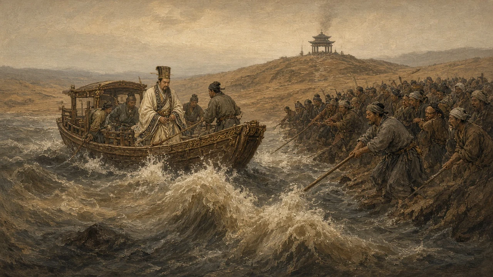
Royal boat on rough water; crowd and distant unused altar. AI-generated interpretation, not a historical record.
Promote merit. Promote the worthy, even commoners’ sons, as Mozi had argued.
Punish. Dismiss the incompetent; punish the evil without trying to reform them.
The boat. The water bears up the boat, and can also capsize it.
No answer. Heaven does not intervene in human affairs.
Rain. Rain after a prayer for rain falls “for no reason.”
Ch. 1 L3 · the Mandate of Heaven ↗
Sources: Ebrey, Ch. 2, p. 29; Xunzi 9, 17.
This slide shows how Xunzi's view of human nature shaped his advice to rulers. He strongly supported the view, first argued by Mozi, that the worthy should be promoted even if they descended from commoners. Asked how to govern, he said the ruler should promote the worthy and capable, dismiss the incompetent, and punish the evil without bothering to try to reform them (p. 29). Compare Mencius, who trusted goodness to grow.
Like Mencius, Xunzi supported the basic message of the Mandate of Heaven, which you studied in Chapter 1: "The ruler is the boat, the common people are the water. It is the water that bears up the boat but also the water that capsizes it" (9). The recap link reopens the Mandate slide.
Xunzi was also the more rigorous thinker. Confucius had sacrificed as if the spirits were present; Xunzi went further and argued that Heaven does not intervene in human affairs and that prayer does not move it: "Why does it rain after a prayer for rain? In my opinion, for no reason. It is the same as raining when you had not prayed" (17) (p. 29).
Royal boat on rough water; crowd and distant unused altar. AI-generated interpretation, not a historical record.
Why this matters: for Reading Guide Q7, this is Xunzi's approach to government.
Check yourself: What did Xunzi mean when he called the people the water?
Q7 story · Why keep the rites? · 3rd century BCE
Xunzi Kept the Rituals Because They Worked
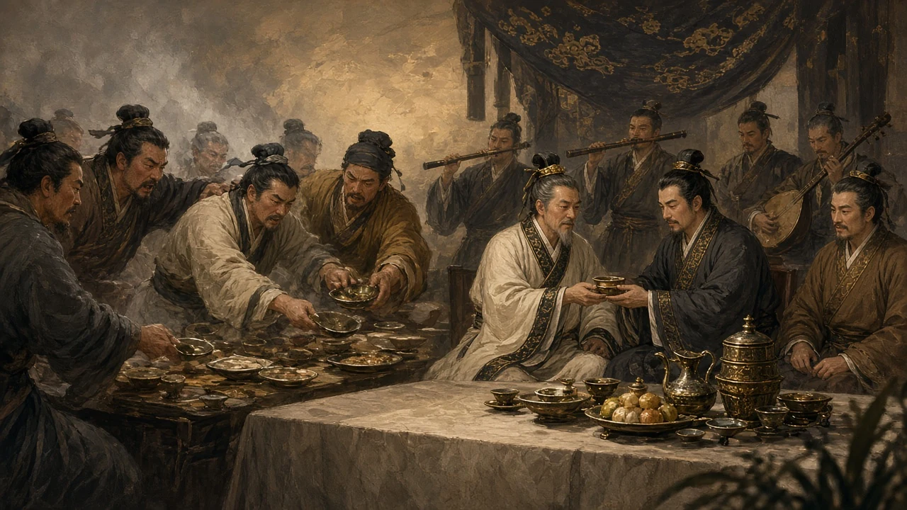
Feast chaos becomes orderly serving and music. AI-generated interpretation, not a historical record.
No prayer, still ritual. Xunzi did not propose abandoning traditional rites.
Order. Ritual was an efficient way to attain order in society.
Feelings. Rites let people express feelings and satisfy desires in order.
Rank. Rites graded by rank sustained the social hierarchy.
Music and ritual. Music builds solidarity; ritual builds duty and difference.
Independent study: Pierian Spring on whether ritual is fake →
Sources: Ebrey, Ch. 2, pp. 29–30 (Silver Inlaid Wine Flask, p. 30).
This slide answers a puzzle. If prayer cannot bring rain, why keep the rituals? Xunzi did not propose abandoning them. In contrast to Daoists and Mohists, who saw rituals as unnatural or extravagant, Xunzi saw ritual as an efficient way to attain order in society (pp. 29–30).
Rulers and educated men, he said, should keep traditional practices such as complex funeral rules, because the rites themselves have good effects on the people who perform and watch them. They let people express feelings and satisfy desires in an orderly way, and, by specifying graded ways to perform the rites according to rank, they sustain the social hierarchy. He also compared ritual and music: music shapes emotions and creates feelings of solidarity , meaning togetherness, while ritual shapes a sense of duty and creates social differences (p. 30).
Notice the answer to Mozi here. Mozi called funerals and music useless; Xunzi said they were useful, just not in the way Mozi measured. And notice the link to human nature: for a born-selfish people, ritual is the training.
Feast chaos becomes orderly serving and music. AI-generated interpretation, not a historical record.
Why this matters: for Reading Guide Q7, this is Xunzi's approach to moral development.
Check yourself: What did music do, and what did ritual do, according to Xunzi?
Self-check · Segment 3 · not graded
Check Yourself: Mencius and Xunzi on Human Nature
Answer each question from memory, out loud or on paper, then click Show answer . Nothing here is graded or recorded.
1. Why did Mencius object when King Hui spoke of “benefit”?
Show answer
If the ruler seeks benefit, officials and commoners will too, and competition for benefit endangers the state (p. 28).
2. What does the child at the well show, according to Mencius?
Show answer
Everyone has inborn commiseration and a sense of right and wrong, so human nature is good (p. 29).
3. What did Xunzi say about human nature?
Show answer
People are born selfish and learn to put moral principle first only through education and ritual (p. 29).
4. Why did Xunzi keep the rituals if Heaven does not answer prayers?
Show answer
Rituals create order, let people express feelings properly, and sustain the hierarchy (pp. 29–30).
Missed one? Go back: mencius-king-hui child-at-well xunzi-selfish ritual-and-music
Segment 3 is done. Before you open Review Question 7, test yourself. These four questions come from the Check yourself prompts on the segment's slides (pp. 28–30).
Answer each one from memory, out loud or on paper, before you click Show answer . If you miss one, use the links at the bottom of the slide to go back to the slide that teaches it, reread its notes, and try again.
Notice the pattern: two questions on Mencius and two on Xunzi, each pair covering human nature and government. Review Question 7 asks you to put them side by side.
Why this matters: recalling facts without looking is the best preparation for writing an answer in your own words.
Check yourself: Which question did you miss or guess, and which slide will you reread before Review Question 7?
Your turn · Reading Guide · Review Question 7
Reading Guide · Review Question 7
Review Question 7
Compare and contrast the interpretations of human nature proposed by Mencius and Xunzi. How did their differing views shape their respective approaches to government and moral development?
Open the Reading Guide ↗
Two parts: first the two views of human nature, then how each view shaped government and moral development. Use a quotation for each thinker.
Go back to the teaching slides: X · concept-human-nature Y · mencius-king-hui Z · child-at-well AA · gaozi-water AB · xunzi-selfish AC · boat-and-water AD · ritual-and-music
Reading Guide Q7 (p. 29). Try to answer on your own first; the button opens the guide in a new tab.
How to build a strong answer: start with the human nature concept slide to define the term. For Mencius , use the child at the well and Gaozi and water slides for his view of nature. For Xunzi , use the born selfish slide and its quotation about a son yielding to his father.
Then trace each view into practice. Government: compare the King Hui slide (benevolence, lighter taxes, no wars of conquest) with the boat and water slide (promote the worthy, punish the evil). Moral development: what does each thinker think a person must do to become good? The ritual and music slide is Xunzi's answer.
Be sure to include a similarity as well as differences, since the question says compare and contrast; both followed Confucius, and both accepted the Mandate. The guide asks you to copy the sentence beginning "Xunzi explicitly opposed..." on page 29.
Why this matters: Xunzi's ideas lead straight to the Legalists of Lecture 3; one of his students was Han Feizi.
Check yourself: Can you state one similarity and two differences between Mencius and Xunzi?
Closing · Back on the road · 497 BCE to the 3rd century BCE
The Teacher No Ruler Would Hire Started an Argument That Outlived the Warring States
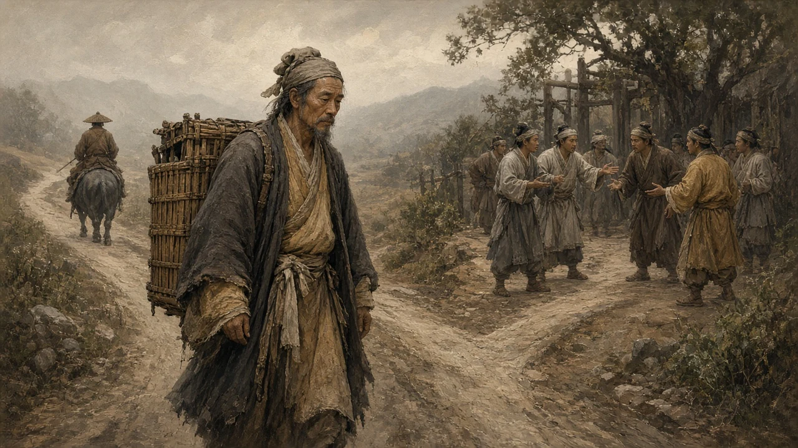
Teacher at road fork; debate and departing ox rider. AI-generated interpretation, not a historical record.
Sources: Ebrey, Ch. 2, pp. 26–30 and 34–35.
This slide closes the loop. Go back to the road from Lu, where a teacher looked for a ruler who would listen and found none (p. 26). For two and a half centuries after his death, thinkers argued with him. Mozi asked whether his rituals helped anyone. Mencius and Xunzi, both his followers, split over what human beings are made of, and so over how to govern and how to teach (pp. 27–30).
Your textbook's summary puts it briefly: Confucius believed force was less effective than moral example; Mencius urged rulers to rule through goodness and argued that human nature is good; Xunzi stressed the power of ritual and argued that human nature is selfish and must be curbed through education; and Mozi argued against favoring one's own relatives and decried wasteful ritual (pp. 34–35).
Teacher at road fork; debate and departing ox rider. AI-generated interpretation, not a historical record. The next lecture explores Daoist and Legalist responses to disorder (pp. 30–32).
Why this matters: Lecture 3 opens with thinkers who rejected the whole Confucian project, so keep Confucius's principles in mind.
Check yourself: In one sentence, what would Confucius say to Xunzi's claim that Heaven does not answer prayers?
Beyond the lecture
Pierian Spring
Independent Study
Today's lecture ends here. Continue on your own: the stories below finish this chapter's history, and each ends with a review question to answer.
"A little learning is a dang'rous thing;Alexander Pope, An Essay on Criticism , 1711
Welcome to the Pierian Spring. In Greek myth its water brought knowledge. These slides are required independent study: they are not part of the lecture, and you read them on your own with the notes open.
Ten slides follow one modern reading of Confucius's idea of li , ritual (p. 27), by the philosopher Herbert Fingarette. Two more finish stories from your textbook: Mencius on Heaven (p. 29) and Confucius defending Guan Zhong (p. 22). Each ends with a review question to answer.
Check yourself: Before you start, define li in one sentence.
Independent study · Fingarette on ritual · 1: the puzzle
Is Confucianism a Religion? Fingarette Said the Question Looks in the Wrong Place
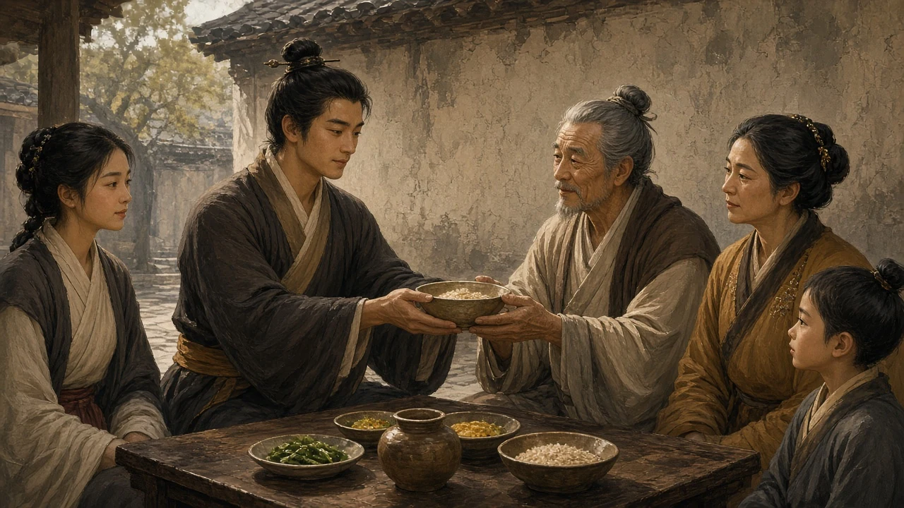
Ordinary family food offering becomes sacred shared care. AI-generated interpretation, not a historical record.
The puzzle. Students often ask: is Confucianism a religion or a philosophy?
The template. The question assumes religion means God, creed, salvation, clergy, worship.
Fingarette, 1972. The sacred can be enacted, not only believed.
No gods required. Sacredness can arise inside disciplined human practice.
Not atheism. The secular can become sacred through ritual action.
← Back to the lecture: “Lead them by virtue”
Sources: Herbert Fingarette, Confucius: The Secular as Sacred (1972) outside the textbook ; Ebrey, Ch. 2, pp. 26–27.
This required independent-study slide asks whether Confucianism is a religion or a philosophy. The illustration treats ordinary family care as sacred shared action. Confucius talked mostly about society and politics, yet sacrificed as though the spirits were present (p. 27). AI-generated interpretation, not historical evidence.
In 1972 the American philosopher Herbert Fingarette wrote a short book, Confucius: The Secular as Sacred , which is outside your textbook. He argued that the question itself assumes a Western template: religion means belief in a supernatural realm, a God, a creed, salvation, clergy and worship. Confucius does not center those things, so by that template he looks "not religious." Fingarette's reply: you are looking in the wrong place for the sacred.
His big claim is that Confucius shows the sacred can be enacted , meaning done, not only believed. He is not calling Confucius a modern atheist. He is saying that ordinary, secular life can become sacred through ritual action.
Recall the lecture's terms: ren is humaneness, li is ritual propriety, and the junzi is the person whose cultivated character shows in conduct (pp. 26–27).
Why this matters: it reframes Reading Guide Q5's principle of ritual.
Check yourself: What Western template, according to Fingarette, makes Confucius look "not religious"?
Independent study · Fingarette on ritual · 3: the handshake
A Handshake Shows That Meaning Lives in a Recognized Form
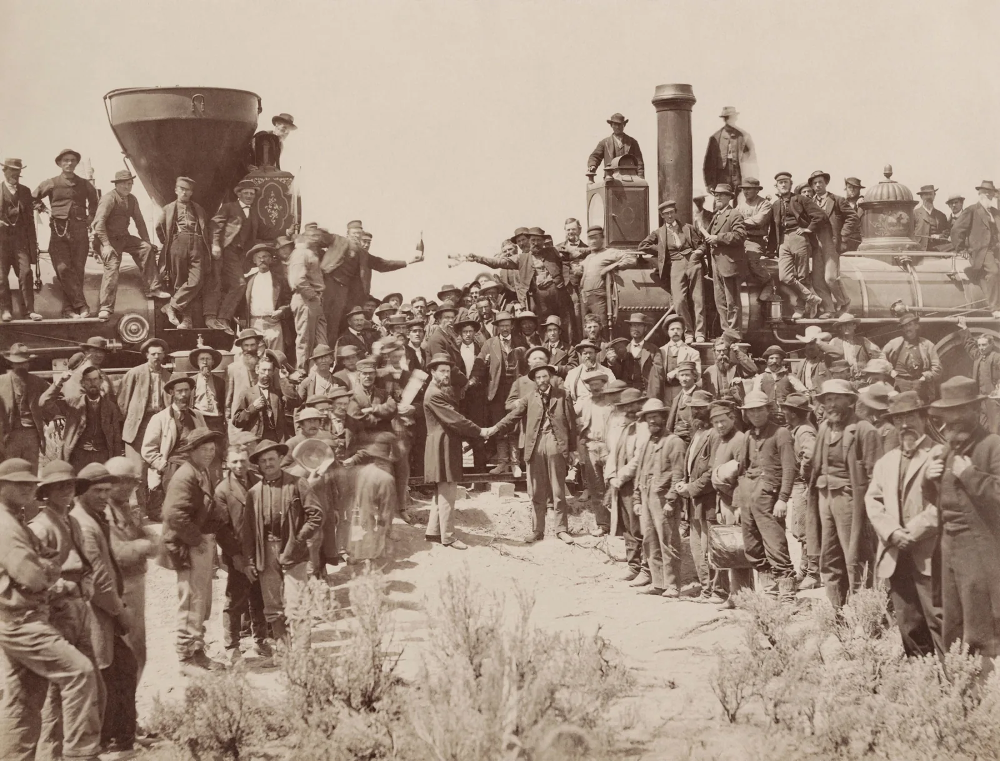
Two railroad chiefs shake hands at the joining of the first transcontinental railroad, Promontory Summit, Utah, 1869. Photo: Andrew J. Russell. Public domain, Wikimedia Commons .
Physics. Two palms clasp, with some pressure and motion. That is all.
Ritual. Greeting, respect, agreement or reconciliation: “I recognize you.”
Shared. It works because both people know what it is and take part.
Refusal. Refuse a handshake, and the relationship changes at once.
← Back to the lecture: ren and li
Sources: Herbert Fingarette, Confucius: The Secular as Sacred (1972) outside the textbook ; Ebrey, Ch. 2, p. 27.
This independent-study slide gives you Fingarette's most famous example. Think about a handshake. Physically it is two palms clasping, some pressure and some motion; that is all a physicist would see. Socially it can mean a greeting, respect, an agreement or a reconciliation. In effect it says, "I recognize you."
The meaning is not in the motion. It is in the recognized form . A handshake works only because both people understand what kind of act it is and take part in it. Try refusing one: the relationship changes immediately, though nothing physical has happened.
Look at the photograph from 1869. When the two halves of the first railroad across the United States met, the chiefs of the two companies shook hands for the camera. The handshake did not move a single rail, but it marked the job as done and the rivals as partners.
Confucius, Fingarette argued, treats a huge range of social behavior the same way. Recall the five relationships slide: every relationship had its proper forms (p. 26), and li meant acting in the right form (p. 27).
Why this matters: for Reading Guide Q5, the handshake makes li something you can see in your own life.
Check yourself: Why does refusing a handshake change a relationship if nothing physical happens?
Independent study · Fingarette on ritual · 4: scale up
Confucius Made Everyday Life the Arena of Moral Cultivation
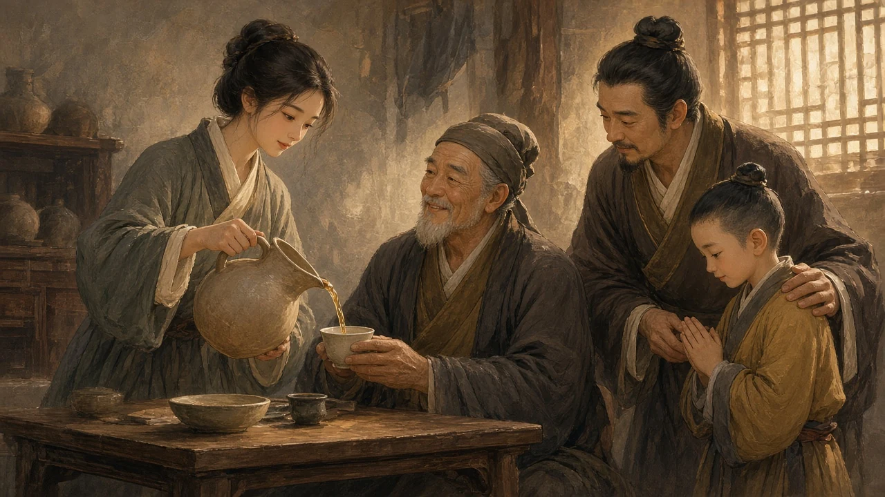
Family pours warm drink and coaches courteous greeting. AI-generated interpretation, not a historical record.
Elders. Greeting elders and teachers properly is li.
Parents. Serving parents, and speaking to them properly, is li.
Guests. Hosting guests, weddings, funerals and mourning are li.
The body. Posture, timing, deference and restraint are li too.
Every day. Sacredness is not saved for one day in one building.
← Back to the lecture: filial piety and the five relationships
Sources: Herbert Fingarette, Confucius: The Secular as Sacred (1972) outside the textbook ; Ebrey, Ch. 2, pp. 26–27.
This independent-study slide scales the handshake up. For Confucius, Fingarette argued, a huge range of everyday actions can work as li : greeting elders and teachers; serving parents and speaking to them properly; hosting guests; mourning the dead; weddings and funerals; and even posture, timing, deference and restraint.
Connect this to your textbook. Filial piety included reverent obedience to parents and the expected rituals of mourning and sacrifice (p. 26). Confucius told Zhonggong to treat everyone as if welcoming a great guest and to employ people as though conducting a great sacrifice, which your textbook explains as treating them according to li (12.2) (p. 27).
Here is Fingarette's key contrast. Confucianism does not reserve sacredness for one day a week in a special building. Sacred meaning is spread across daily life, wherever actions are done with reverence and proper form. Everyday life becomes the arena, the place where the contest happens, of moral cultivation.
Family pours warm drink and coaches courteous greeting. AI-generated interpretation, not a historical record.
Why this matters: for Reading Guide Q5, it links filial piety, ritual and the five relationships.
Check yourself: Name four everyday actions that Confucius would treat as li.
Independent study · Fingarette on ritual · 5: “magic”
Fingarette Called Ritual “Magic” Because It Changes Social Reality
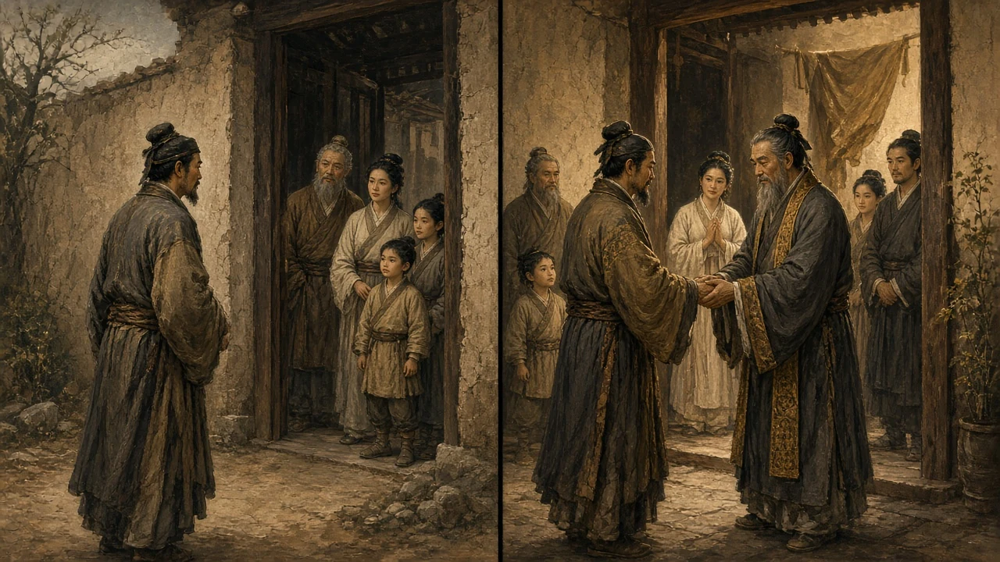
Stranger at threshold becomes welcomed guest after greeting. AI-generated interpretation, not a historical record.
Not paranormal. “Magic” here means ritual action that makes something socially real.
A wedding. It does not only express love; it makes a marriage.
A funeral. It does not only express grief; it makes the dead an ancestor.
A bow. It does not only show respect; it enacts a relationship.
No gods. No god intervenes, yet something real changes.
← Back to the lecture: study and the spirits
Sources: Herbert Fingarette, Confucius: The Secular as Sacred (1972) outside the textbook ; Ebrey, Ch. 2, pp. 26–27.
This independent-study slide explains Fingarette's most provocative word. He said Confucian ritual has a kind of magic . He chose the word to startle readers. He does not mean anything paranormal. He means performative power : an action that makes something socially real by being done, things happening that cannot be explained by mechanics alone.
Three examples. A wedding does not only express love; it constitutes a marriage, so two people walk out with a new relationship. A funeral does not only express grief; it re-situates the dead as an ancestor. A bow does not only show respect; it enacts a relationship. No god intervenes in any of these, yet something real has changed.
Connect this to your textbook. Filial piety meant mourning parents when they died and making sacrifices to them afterward (p. 26), and Confucius sacrificed as though the spirits were present (p. 27). On Fingarette's reading, the funeral and the sacrifices do real work whether or not the spirits are fed: they turn a dead parent into an honored ancestor.
The portrait is real, from the Qing dynasty, of the kind families hung during rites for their dead.
Why this matters: Fingarette calls this the heart of "the secular as sacred," a deeper look at Reading Guide Q5's ritual.
Check yourself: In your own words, what does Fingarette mean by ritual "magic"?
Stranger at threshold becomes welcomed guest after greeting. AI-generated interpretation, not a historical record.
Independent study · Fingarette on ritual · 6: is ritual fake?
Fingarette Answered the Charge That Ritual Is Fake: Form Can Train Sincerity
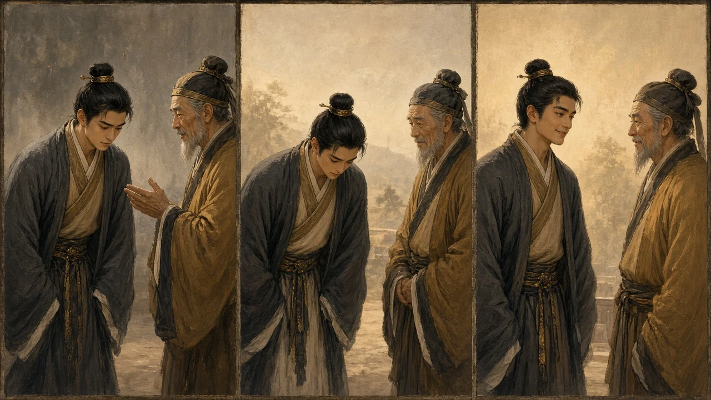
Stiff bow becomes practiced then relaxed attentive respect. AI-generated interpretation, not a historical record.
The suspicion. Many equate authenticity with whatever they feel in the moment.
The reply. Form does not kill sincerity; form can train it.
Feelings. Feelings alone are unstable and need education.
Practice. Ritual disciplines attention; repeated practice makes virtue reliable.
Analogy. As in music or sports, discipline makes real excellence possible.
← Back to the lecture: Xunzi kept the rituals
Sources: Herbert Fingarette, Confucius: The Secular as Sacred (1972) outside the textbook ; Ebrey, Ch. 2, pp. 27, 29–30.
This independent-study slide takes on a modern objection. Many people today assume the most honest act is the one done on impulse, whatever you feel in the moment. By that standard a scripted ritual looks fake, an empty performance.
The Confucian reply, as Fingarette reads it, is that form does not kill sincerity; form can train sincerity. Your feelings matter, but on their own they are unstable and need education. Ritual disciplines attention and self-control, and through repeated practice virtue becomes reliable, so you become dependable for others. Fingarette calls ritual a kind of moral craftsmanship.
Think of a musician or an athlete: disciplined practice can make an initially stiff action feel natural. Stiff bow becomes practiced then relaxed attentive respect. AI-generated interpretation, not a historical record.
Your textbook supports both halves. Confucius refused empty ritual: "Ritual performed without reverence... I cannot bear" (3.26) (p. 27). And Xunzi, on the ritual and music slide, argued that people are born selfish and that ritual shapes them, letting them express feelings in an orderly way (pp. 29–30).
Why this matters: it answers the charge that Confucian ritual was empty, for Reading Guide Q5.
Check yourself: Why might someone dismiss ritual as "empty," and how does Fingarette respond?
Independent study · Fingarette on ritual · 7: immanent sacredness
Not a Western-Style Religion, Yet Religious in a Broader Sense
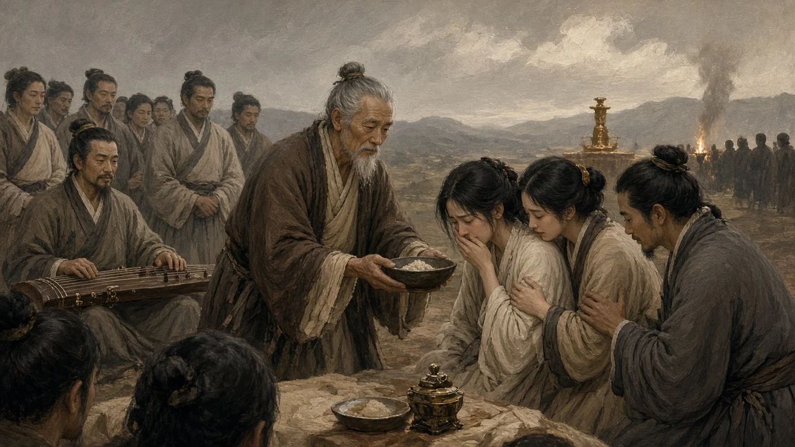
Shared mourning, food and music bind community outdoors. AI-generated interpretation, not a historical record.
Not narrowly. No creator god, salvation doctrine or required priest at the center.
Yet broadly. Ultimate meaning, reverence and self-transformation through practice.
Immanent. The sacred is here, in this world, not somewhere else.
Where. Holiness appears in proper relationships and human interaction.
How. The sacred emerges through ordinary actions perfected.
← Back to the lecture: the ideal early Zhou
Sources: Herbert Fingarette, Confucius: The Secular as Sacred (1972) outside the textbook ; Ebrey, Ch. 2, pp. 26–27.
This independent-study slide sums up Fingarette's answer to the puzzle. In the narrow Western sense, Confucianism is not a religion: it has no creator god at its center, no doctrine of salvation, and no required priests standing between people and the sacred. In a broader sense it is religious. A working definition: religious practices structure ultimate meaning, cultivate reverence and transform persons. Confucianism does all three without a salvation story or a personal God.
Fingarette calls this immanent sacredness . Immanent means here and now, within this world, rather than somewhere else. Holiness appears in proper relationships; the Way is learned in human interaction; moral order is lived, made real through conduct. The sacred is not missing from Confucius; it is concentrated in ordinary life done well.
Tie this to the lecture. Ren, humaneness, becomes real through ritualized relationships, and Confucius stressed the five relationships and the ideal of everyone fulfilling his role (pp. 26–27).
Shared mourning, food and music bind community outdoors. AI-generated interpretation, not a historical record.
Why this matters: for Reading Guide Q5, it shows how ethics and the sacred meet in Confucius.
Check yourself: What does "immanent" mean, and where does Fingarette find the sacred in Confucius?
Independent study · Fingarette on ritual · 8: a comparison
A Rough Comparison Sets a Common Abrahamic Pattern Beside Fingarette’s Confucius
The sacred. Abrahamic: a transcendent God. Confucian: perfected human interaction.
Practice. Abrahamic: prayer and worship. Confucian: ritual and self-cultivation.
Emphasis. Abrahamic: belief and faith. Confucian: practice and formation.
Who leads. Abrahamic: clergy often mediate. Confucian: everyone takes part.
Caution. A simplification to show differences, not a ranking of better and worse.
Sources: Herbert Fingarette, Confucius: The Secular as Sacred (1972) outside the textbook ; Ebrey, Ch. 2, pp. 26–27.
This independent-study slide lays out a comparison Fingarette's reading invites. Treat it as a heuristic , a rough tool for seeing differences, not a stereotype and not a claim that one tradition is better.
Read across each row. Where is the sacred? In a common Abrahamic pattern (Judaism, Christianity, Islam) it is linked to a transcendent God beyond the world; in Fingarette's Confucius it is linked to perfected human interaction. What is central? Prayer and worship, versus ritual and self-cultivation. What is emphasized? Belief and faith, versus practice and formation. Who leads? Clergy often mediate, versus everyone taking part in sacred acts.
The point is to widen the category. Sacred meaning can be built through practice, not only anchored in a creed. Each column also simplifies: Abrahamic traditions have rich ritual lives, and Chinese tradition had sacrifices to Heaven and the spirits.
Connect it to the lecture. Confucius said the gentleman was made through cultivation and study, not born (pp. 26–27); in Fingarette's terms, anyone could take part in the sacred by acting well.
There is no image on this slide; the comparison is the content.
Why this matters: for Reading Guide Q5, the comparison clarifies what was distinctive about Confucius's principles.
Check yourself: Pick one row and explain the contrast in your own words.
Independent study · Fingarette on ritual · 9: limits
Scholars Warn That Fingarette’s Confucius Leaves Out Heaven and the Spirits
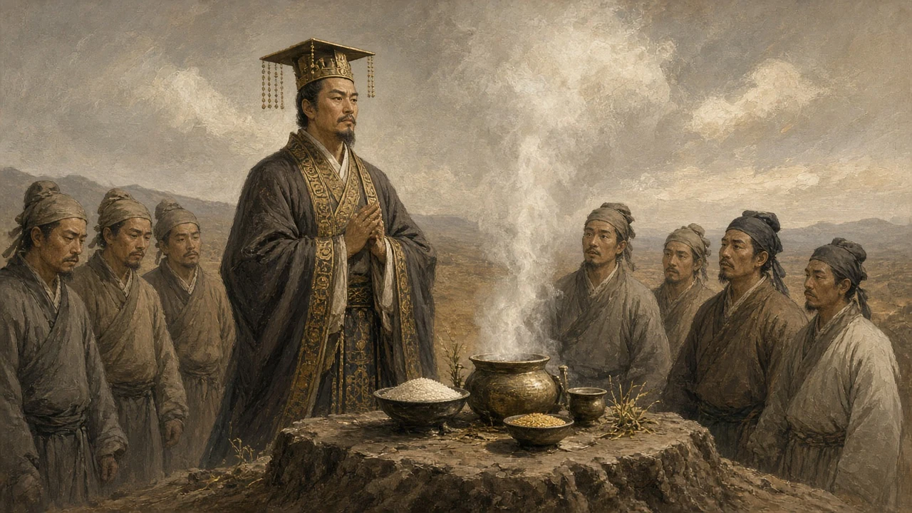
Ruler offers grain at low outdoor altar under open sky. AI-generated interpretation, not a historical record.
Heaven. He may underplay Heaven, spirits and the language of sacrifice.
Inner life. He may stress ritual form over inner moral psychology.
Whose practice. He reads elite texts more than ordinary people’s practice.
Balance. Best read as re-centering li, not denying all transcendence.
The takeaway. Religion, ethics and sincerity may be closer than we assume.
← Back to the lecture: study and the spirits
Sources: Herbert Fingarette, Confucius: The Secular as Sacred (1972) outside the textbook ; Ebrey, Ch. 2, pp. 27, 29.
This independent-study slide gives you the scholarly caution. Scholars disagree about how secular Confucius was, and they raise three criticisms of Fingarette. He may underplay transcendent elements, the references to Heaven, spirits and sacrifice that run through early Chinese texts. He may overemphasize ritual form compared with inner moral psychology, the feelings and motives Mencius later stressed. And he relies on elite philosophical texts more than on what ordinary people actually practiced.
Confucius sacrificed as though the spirits were present (p. 27). Xunzi argued that prayers for rain do nothing (p. 29), suggesting many people believed they did. Ruler offers grain at low outdoor altar under open sky. AI-generated interpretation, not a historical record.
The balanced takeaway: Fingarette is best read as re-centering li , showing its meaning-making power, not as denying all transcendence. You can use his lens without making it the whole truth.
His larger lesson challenges three assumptions: that religion means belief in supernatural beings, that ethics and religion are separate, and that ritual is the opposite of sincerity.
Why this matters: weighing a modern interpretation against evidence is how you strengthen any answer to Reading Guide Q5.
Check yourself: Name two criticisms of Fingarette, and one piece of textbook evidence for each side.
Independent study · Fingarette on ritual · 10: rituals today
Graduations, Oaths and Apologies Show the Secular as Sacred Today
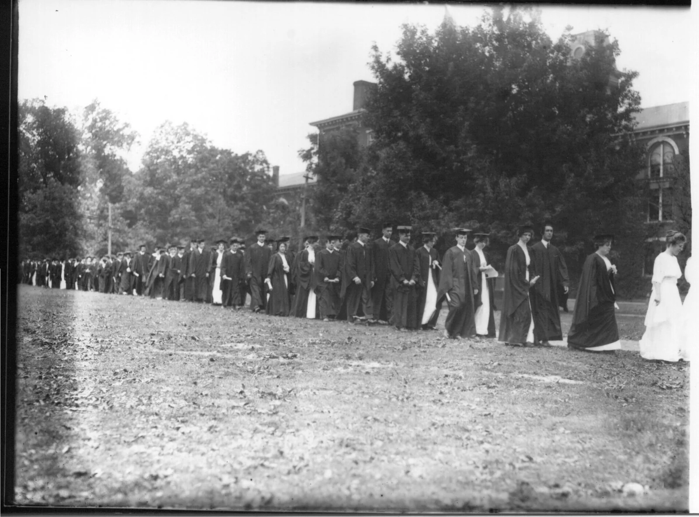
Commencement procession, 1914 (Miami University). Photo: Frank R. Snyder. Public domain, Wikimedia Commons .
Graduations. A ceremony makes a student a graduate.
Oaths. Court oaths and promises bind people by being spoken.
Apologies. Apology and forgiveness repair a relationship.
Names. Introductions, titles, memorials and funerals all do social work.
Breakdown. What happens when rituals break down or are mocked?
← Back to the lecture: “Lead them by virtue”
Sources: Herbert Fingarette, Confucius: The Secular as Sacred (1972) outside the textbook ; Ebrey, Ch. 2, pp. 26–27.
This independent-study slide brings Fingarette into your own life. Even "non-religious" modern life is full of rituals that create meaning, not only express it. A graduation makes a student a graduate. A court oath binds a witness. An apology and its acceptance repair a relationship. Introductions and titles place people; memorials and funerals honor the dead.
Now ask the harder question: what happens when rituals break down, or are treated cynically? Think about social trust, disrespect and alienation. Confucius lived in a time when the old Zhou rituals were breaking down along with the old order, which is one reason he cared so much about restoring them (pp. 26–27).
Test your understanding with three questions. Define "secular as sacred" in your own words. Give one modern ritual that creates meaning rather than just expressing it. Explain why someone might dismiss ritual as empty, and how Fingarette would respond.
Fingarette's closing suggestion is radical: holiness might not be in the sky; it might be in how we greet, apologize, mourn and keep promises, in the way we treat one another.
The photograph shows a real commencement procession from 1914, a ritual of status change you may recognize from graduations today.
Why this matters: applying an idea to new cases is the best test that you understand it, including Reading Guide Q5's principle of li.
Check yourself: Which modern ritual in your life creates something new, and what does it create?
Independent study · Q7 story · Mencius on Heaven · 4th century BCE
Mencius Said Heaven Speaks Through the People, and True Kings Come Every 500 Years
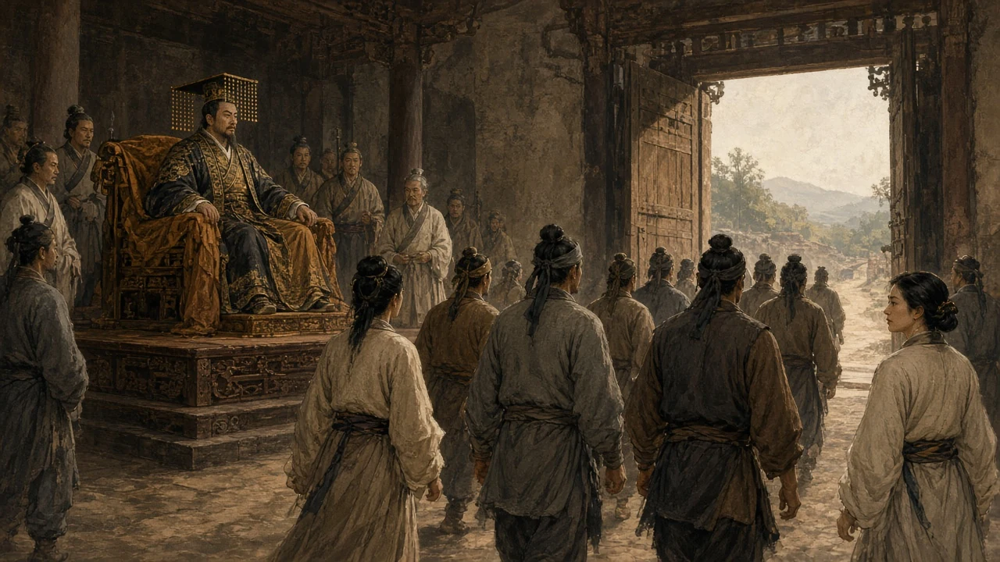
People turn backs on isolated ruler and leave palace. AI-generated interpretation, not a historical record.
Moral Heaven. Heaven wants people to be moral.
Through choices. Heaven works in history through human choices.
The people. Heaven validates a ruler through the people’s acceptance of him.
Rare kings. Not every ruler is validated; true kings come about every 500 years.
Contempt. Officials who enriched bad rulers earned Mencius’s scorn.
Review question to answer · Q7
Compare and contrast the interpretations of human nature proposed by Mencius and Xunzi. How did their differing views shape their respective approaches to government and moral development?
Open the Q7 checkpoint: Mencius and Xunzi
← Back to the lecture: King Hui and the word “benefit”
Sources: Ebrey, Ch. 2, p. 29.
This independent-study slide finishes the story of Mencius. Sometimes, your textbook says, Mencius related men's moral nature to Heaven. Heaven wants people to be moral and operates in history through people's choices. Heaven validates a ruler's authority through the people's acceptance of him (p. 29).
That is the Mandate of Heaven from Chapter 1, with a twist: the people's acceptance is the sign of Heaven's will. But Mencius did not think every ruler had been validated by Heaven. True kings, he said, tended to appear only about every five hundred years (p. 29). In his own day of warring kings, that was a sharp judgment.
The same view explains his scorn for men who served an unworthy ruler, especially those who worked hard to fill the ruler's coffers or expand his territory. He pointed out that Confucius broke with his disciple Ran Qiu, who doubled the tax collection but did nothing to reform the ruler's character (p. 29).
Compare Xunzi on the boat and water slide: Heaven does not intervene at all, yet the people can still capsize the boat.
The portrait is imagined, painted long after Mencius lived.
Why this matters: for Reading Guide Q7, it deepens Mencius's approach to government.
Check yourself: How, according to Mencius, does Heaven show that it accepts a ruler?
People turn backs on isolated ruler and leave palace. AI-generated interpretation, not a historical record.
Independent study · Q5 story · A disciple’s objection · Analects 14.18
Confucius Defended Guan Zhong Against His Own Disciple
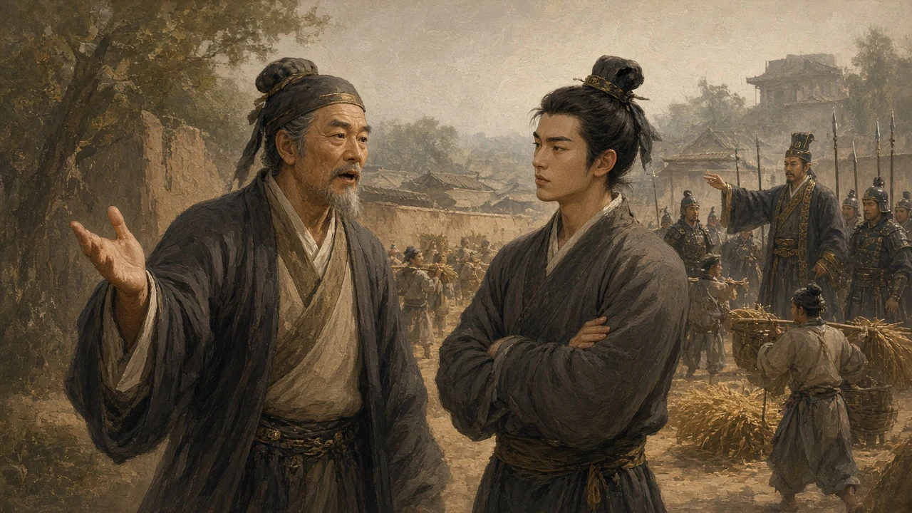
Teacher defends practical benefits to skeptical disciple. AI-generated interpretation, not a historical record.
The objection. Guan Zhong did not die with his lord, but served his killer.
Loyalty. For the disciple, that made Guan Zhong unworthy of respect.
The reply. Guan Zhong made Duke Huan hegemon and united the realm.
The benefit. People still enjoyed the good he did.
The image. Without him, “our hair would hang unbound”: we would live as barbarians.
Ch. 2 L1 · Guan Zhong ↗
← Back to the lecture: the junzi redefined
Sources: Ebrey, Ch. 2, p. 22 (Biography: Guan Zhong).
This independent-study slide returns to Guan Zhong, the adviser you met in Lecture 1, to show Confucius weighing two virtues against each other. The recap link reopens the Lecture 1 slide.
Remember the story: when Duke Huan of Qi killed his brother Jiu, Guan Zhong, who had served Jiu, did not die with his lord. Instead he became Duke Huan's chancellor (p. 22). In the Analects, one of Confucius's disciples thought this lack of loyalty made Guan Zhong a man unworthy of respect (p. 22). Tradition identifies the disciple as Zigong.
Confucius disagreed: "Guan Zhong became chancellor to Duke Huan and made him hegemon among the lords, uniting and reforming all under heaven. The people, down to the present, continued to receive benefits from this. Were it not for Guan Zhong our hair would hang unbound and we would fold our robes on the left," that is, live as barbarians (Analects 14.18) (p. 22).
Notice what Confucius valued here: an adviser's service to the people and to civilization outweighed strict loyalty to one lord. That fits his ideal of the gentleman who advises rulers on how to govern.
The portrait is imagined, painted long after Zigong lived.
Why this matters: for Reading Guide Q5, it shows Confucius's principles in a hard case.
Check yourself: What did the disciple criticize, and what did Confucius praise instead?
Teacher defends practical benefits to skeptical disciple. AI-generated interpretation, not a historical record.
Sources and image credits
The Stories in This Deck Rest on These Sources
Your textbook
Patricia Buckley Ebrey, A History of China , Chapter 2, “Philosophers and Warring States During the Eastern Zhou Period (770–256 BCE),” pp. 26–30 and 34–35, including the Confucian Virtues box (p. 26), Bells of the Marquis of Yi (p. 28) and Silver Inlaid Wine Flask (p. 30); Biography: Guan Zhong (p. 22).
Primary texts quoted in the textbook
Analects 2.3, 3.26, 7.19, 8.2, 12.2, 14.18, 15.18, 15.30; Mencius 1A.1, 2A.6, 6A.2; Xunzi chs. 9, 17, 23 (the textbook prints “13”).Beyond the textbook
Herbert Fingarette, Confucius: The Secular as Sacred (Harper & Row, 1972), the source of the Pierian Spring’s ten Fingarette slides. Traditions about Confucius’s route, the Duke of Zhou, and Zigong in Analects 14.18.
Further reading
Benjamin Schwartz, The World of Thought in Ancient China (1985); A. C. Graham, Disputers of the Tao (1989); Bryan Van Norden, Introduction to Classical Chinese Philosophy (2011). Full bibliography in the background essay.
Video
“Mencius - The Baby in the Well,” Steven Austin (Seek Learning), YouTube, youtu.be/iBFJ2aXFeMc ; slide AV.
Images
AI-generated cinematic interpretations and explanatory diagrams, approved by Steven on 2026-11-06; not primary-source evidence. The historical handshake and commencement photographs remain credited in their captions. Steven Austin’s baby-in-well video remains unchanged.
Textbook wording kept on the slides, with corrections in the notes: Xunzi’s dates (p. 29), the Xunzi chapter number (p. 29), and the Marquis Yi bell count and name (p. 28).
Background essay: the historians’ debates behind this lecture ↗
This slide gives you the sources behind the stories. Most of the facts in this deck come from your textbook, Chapter 2, pages 26 to 30 (pp. 26–30), with Guan Zhong from page 22 and the chapter summary from pages 34 and 35. The Pierian Spring's Fingarette slides come from a modern book outside your textbook, and the notes say so each time.
Three small corrections you should know about. Your textbook dates Xunzi ca. 310–ca. 215 BCE; most scholars put his death around 238–235 BCE. It cites Xunzi's passage on sons yielding to fathers as chapter 13; it is in chapter 23. And its caption calls the bell set 64 pieces belonging to the "Marquis of Yi"; most counts give 65 bells, and the ruler was Marquis Yi of the state of Zeng. The slides keep the textbook's wording, and the notes give the correction.
Why this matters: every claim in a history deck should be traceable to a source you could check yourself.
Check yourself: Pick one fact from this deck that comes from beyond the textbook. Where would you go to check it?